1Analyse du scan réseau (Nmap)
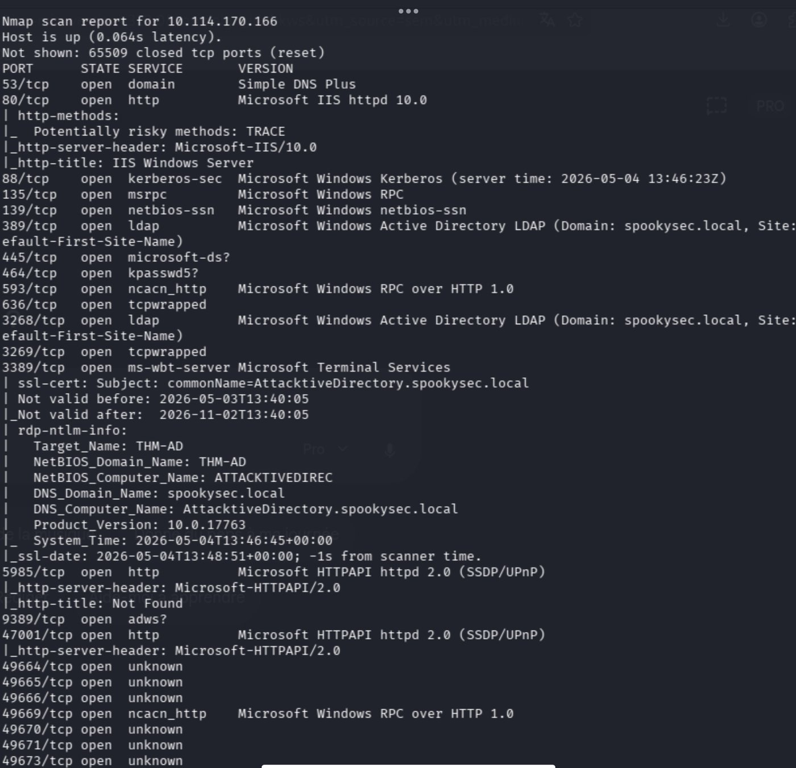
Objectif : Cartographier la surface d'attaque exposée et identifier précisément la nature de la machine cible au sein du réseau.
Résultats de l'énumération et identification
La capture présente le résultat d'un scan de ports exhaustif. L'analyse des services ouverts permet de caractériser l'environnement cible sans ambiguïté :
- Contrôleur de domaine (DC) : La présence simultanée des ports 88 (Kerberos), 389 (LDAP) et 3268 (Global Catalog) constitue la signature réseau absolue et caractéristique d'un Domain Controller Active Directory.
- Identité du système : Les scripts Nmap liés aux protocoles LDAP et RDP (port 3389) ont divulgué des informations précieuses. Le domaine ciblé est spookysec.local et son nom NetBIOS est THM-AD. Le nom complet de l'hôte (FQDN) est AttacktiveDirectory.spookysec.local.
- Technologies en place : La découverte d'un serveur Microsoft IIS version 10.0 sur le port 80 suggère fortement un environnement Windows Server récent (type Windows Server 2019).
Vecteurs d'attaque potentiels à prioriser
L'exposition de ces services définit notre feuille de route pour la phase de reconnaissance active :
- Port 80 (HTTP) : Bien qu'il s'agisse d'un DC, un serveur web est exposé. Nmap signale par ailleurs que la méthode HTTP TRACE est activée, ce qui représente un risque potentiel.
- Port 53 (DNS) : Service vital de l'écosystème AD. Il fera l'objet de requêtes pour tenter un transfert de zone (AXFR) afin de révéler l'architecture interne.
- Port 88 (Kerberos) : Protocole d'authentification central de l'AD. Il constitue une cible critique pour l'énumération d'utilisateurs et les futures tentatives d'AS-REP Roasting.
- Port 445 (SMB) : Le service de partage de fichiers Windows est accessible. Il devra être énuméré en priorité pour tester la possibilité d'établir une session nulle (Null Session) et lister les partages ou comptes.
- Ports 5985 (WinRM) et 3389 (RDP) : Ces interfaces d'administration à distance sont exposées. Elles serviront d'objectifs de connexion une fois des identifiants valides récupérés (post-exploitation).
2Reconnaissance DNS et Configuration Locale
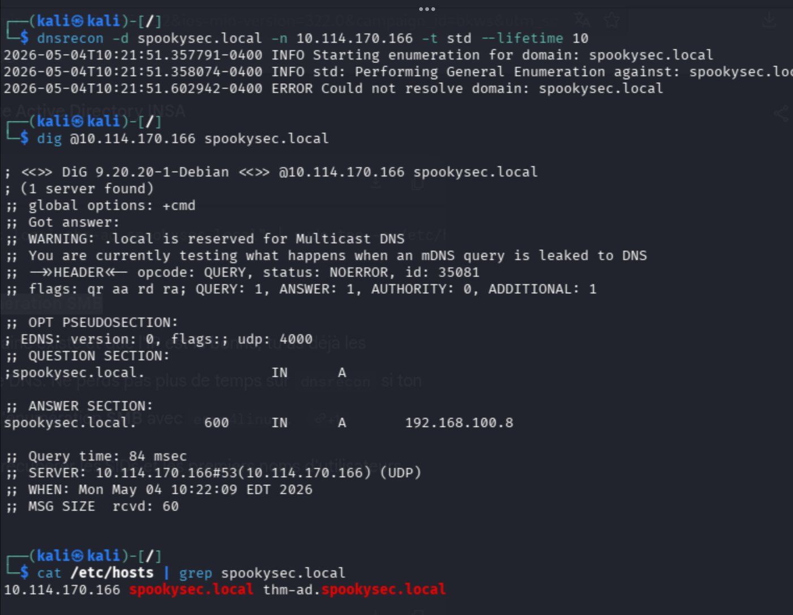
Objectif : Énumérer les enregistrements DNS du contrôleur de domaine et assurer la résolution de noms pour les outils d'attaque.
Analyse des commandes et résultats
- Échec de l'énumération initiale (dnsrecon) : La commande dnsrecon tente d'effectuer une énumération générale du domaine cible. Cependant, elle se solde par l'erreur Could not resolve domain: spookysec.local. Dans le déroulement théorique du TD, cette commande est censée révéler les enregistrements (A, NS, SRV) essentiels à la localisation des services LDAP et Kerberos. L'échec ici démontre que la machine d'attaque Kali ne parvient pas à résoudre ce nom de domaine avec ses paramètres DNS par défaut.
- Interrogation ciblée (dig) : Pour diagnostiquer l'erreur, la commande dig @10.114.170.166 spookysec.local force l'interrogation directe du serveur DNS de la cible (dont l'ouverture du port 53 a été confirmée lors du scan Nmap). Le serveur répond au statut NOERROR, ce qui confirme qu'il est opérationnel, mais il retourne une adresse IP de réseau interne privé (192.168.100.8), inutilisable pour nos outils à travers le VPN.
- Contournement et correction locale (cat /etc/hosts) : C'est l'étape de remédiation critique. Le protocole d'authentification Kerberos est intrinsèquement lié au système DNS et exige l'utilisation de noms de domaine qualifiés (FQDN). Pour que les outils d'exploitation (comme Impacket ou Kerbrute) fonctionnent, le système Kali doit savoir associer le domaine à l'adresse IP correcte du VPN. L'ajout manuel de la ligne 10.114.170.166 spookysec.local thm-ad.spookysec.local dans le fichier /etc/hosts force cette résolution en local.
Conclusion de l'étape
Cette capture met en évidence une étape de préparation technique incontournable. L'inscription statique dans le fichier /etc/hosts permet de pallier les limitations de résolution DNS via le VPN, débloquant ainsi la voie pour les attaques ultérieures ciblant Active Directory.
3Reconnaissance Web (Port 80) - Fingerprinting avec Nikto
Objectif : Analyser le serveur web exposé sur le port 80 afin d'identifier d'éventuelles vulnérabilités connues ou des défauts de configuration exploitables.
Analyse des résultats
L'outil Nikto effectue un scan de vulnérabilités web ("fingerprinting"). L'analyse de sa sortie met en évidence plusieurs éléments de configuration :
- Identification du Serveur : Le scan confirme avec certitude la présence d'un serveur Microsoft IIS 10.0. Même sur un contrôleur de domaine, un tel service peut héberger des portails d'administration interne, ce qui justifie cette investigation.
- En-têtes de sécurité manquants : La majorité des alertes remontées par Nikto concernent l'absence d'en-têtes de sécurité fondamentaux (x-content-type-options, strict-transport-security, content-security-policy, X-Frame-Options, etc.). Cette absence traduit une mauvaise hygiène de sécurité globale de l'application web.
- Méthodes HTTP autorisées : L'information technique la plus pertinente est l'activation de la méthode HTTP TRACE parmi les méthodes publiques (aux côtés de GET, POST, OPTIONS et HEAD). L'activation de cette méthode de débogage en production représente une vulnérabilité potentielle, car elle peut servir de vecteur pour des attaques de type Cross-Site Tracing (XST).
Conclusion de l'étape
Bien que la configuration du serveur web soit perfectible (en-têtes absents, méthode TRACE activée), la page d'accueil IIS par défaut est la seule présente et aucune application métier vulnérable n'est visible en surface. L'exploitation d'une vulnérabilité web complexe n'est donc pas la piste la plus viable ici. Cette étape permet d'éliminer la surface web comme vecteur d'intrusion initial et nous conforte dans l'idée d'orienter la suite de l'attaque vers les services spécifiques à Active Directory (Kerberos, SMB).
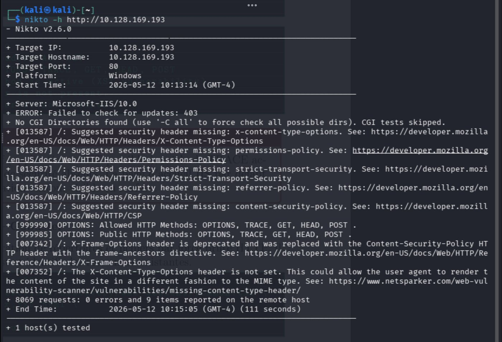
5Découverte de répertoires web (Port 80) - Exécution de Gobuster
Objectif : Finaliser l'énumération des répertoires et fichiers du serveur web IIS
Analyse des résultats et de l'exécution
La capture montre l'exécution complète du scan Gobuster, mais met également en lumière un détail intéressant lié à l'utilisation du terminal :
- L'énumération : L'outil a bien pris en compte le dictionnaire common.txt et a testé 28 500 requêtes en utilisant 50 threads (connexions simultanées). Le scan est allé jusqu'à 100%.
- Résultat du scan : Contrairement à ce que l'on pourrait parfois attendre d'une machine vulnérable, Gobuster n'a retourné absolument aucun résultat (aucun code de statut 200, 301, 403, etc.). Aucun répertoire caché, fichier de configuration, ou portail d'administration n'a été découvert.
- Analyse de l'erreur finale (-o: command not found) : C'est une erreur classique de formatage lors du copier-coller. Dans un support de cours ou un script, les commandes longues sont souvent divisées sur plusieurs lignes à l'aide d'un antislash (\) à la fin de chaque ligne. Ici, la commande a été collée sur deux lignes distinctes sans cet antislash. Le terminal a donc exécuté la première ligne (le scan Gobuster), a attendu sa conclusion, puis a tenté d'exécuter la deuxième ligne (-o gobuster_results.txt) comme si c'était une nouvelle commande système, d'où l'erreur. Heureusement, cela n'a pas empêché le scan de s'effectuer, cela a juste empêché la sauvegarde du résultat dans un fichier texte.
Conclusion de l'étape
Cette exécution confirme de manière définitive l'hypothèse soulevée lors de l'analyse avec Nikto : la surface d'attaque web de ce contrôleur de domaine est minime et non exploitable. En tant qu'attaquant, il est crucial de ne pas s'obstiner. Il faut maintenant pivoter vers l'énumération des protocoles d'infrastructure, en commençant par le partage de fichiers SMB (port 445).
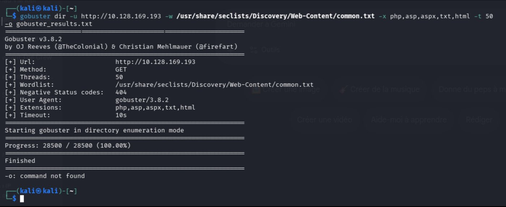
6Découverte récursive web (Port 80) - Énumération avec Feroxbuster
Objectif : Pousser l'investigation web plus loin en utilisant un outil d'énumération récursive pour s'assurer qu'aucun répertoire caché en profondeur n'a échappé au premier scan. Feroxbuster se présente comme une alternative à Gobuster avec une récursivité automatique.
Analyse de l'exécution et des résultats
La capture illustre l'utilisation avancée de Feroxbuster face au serveur IIS cible :
- Paramétrage de l'attaque : La commande est configurée pour chercher en profondeur (--depth 3), ce qui signifie que si un dossier est trouvé, l'outil va automatiquement scanner à l'intérieur de celui-ci. L'attaque utilise une liste de mots robuste (raft-medium-directories.txt) et cible précisément les extensions pertinentes pour l'écosystème .NET/IIS identifié précédemment (asp, aspx, txt).
- Analyse des codes HTTP 200 (OK) : Sur plus de 120 000 requêtes effectuées par l'outil, seules la racine du site (/) et l'image par défaut (iisstart.png) répondent positivement. Cela confirme la présence de la page d'accueil IIS standard et l'absence de portail d'administration visible en surface.
- Analyse des codes HTTP 400 (Bad Request) : L'outil remonte plusieurs erreurs 400 liées à des requêtes contenant error%1F_log. Il ne s'agit pas d'une découverte de ressources cachées. Ce code HTTP indique que le serveur IIS n'a pas compris la requête ou l'a rejetée à cause d'une syntaxe invalide (ici, la présence du caractère de contrôle %1F issu de la wordlist que le serveur web refuse de traiter). Le mécanisme d'auto-filtrage de Feroxbuster a d'ailleurs correctement ignoré les innombrables pages 404 (Not Found) pour ne garder que l'essentiel.
Conclusion de l'étape
Cette analyse récursive approfondie corrobore parfaitement le résultat obtenu avec Gobuster : les deux outils confirment l'absence d'applications web exploitables. La surface web (port 80) est une impasse. Cette conclusion méthodologique nous permet de clôturer la reconnaissance web et de pivoter sereinement vers l'énumération des services d'infrastructure internes de l'Active Directory, à savoir l'énumération SMB via enum4linux ou NetExec.
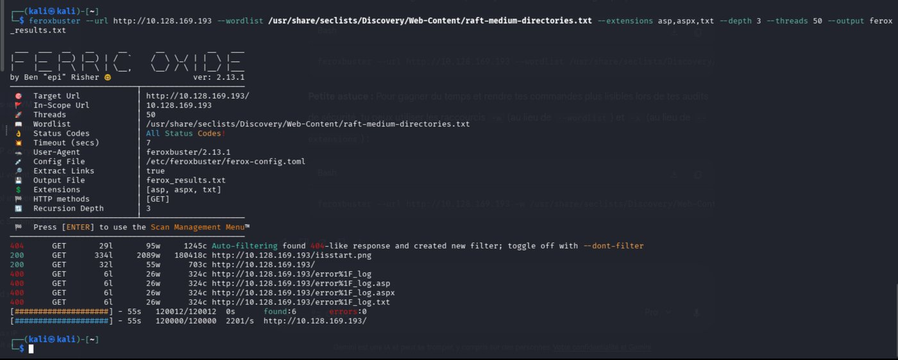
7Énumération SMB (Port 445) - Analyse avec enum4linux
Objectif : Exploiter le protocole de partage de fichiers SMB (port 445) pour extraire des informations fondamentales sur l'architecture du domaine, ses utilisateurs et ses groupes, en simulant une approche sans aucun identifiant.
Analyse des résultats de l'énumération
La capture montre l'exécution de l'outil enum4linux, qui a retourné une quantité massive d'informations critiques malgré l'absence de compte valide :
- Succès de la session nulle (Null Session) : L'outil a réussi à s'authentifier de manière anonyme auprès du contrôleur de domaine (logon username '', password ''). Bien que l'énumération directe classique soit bloquée par le système (ce que confirme l'erreur NT_STATUS_ACCESS_DENIED visible en bas pour les imprimantes), la session nulle partielle autorise tout de même certaines requêtes.
- Technique du RID Cycling : Pour contourner les restrictions, l'outil a utilisé la technique du RID cycling. En Active Directory, chaque objet possède un identifiant de sécurité (SID) qui se termine par un numéro unique (le RID). En testant des plages de RID standards (500-550, 1000-1050), l'outil a pu déduire l'existence des comptes.
- Récupération des SIDs (Security Identifiers) : C'est une découverte majeure. Le scan a extrait le SID unique du domaine THM-AD (S-1-5-21-3591857110-2884097990-301047963). Cette information cryptographique est une condition préalable absolue pour pouvoir forger des tickets Kerberos frauduleux (Golden ou Silver Tickets) lors de la phase de post-exploitation. Un second SID a également révélé les comptes purement locaux de la machine cible.
- Cartographie des cibles : Le RID cycling a révélé la structure interne du domaine. Nous avons désormais identifié avec certitude :
- Le compte krbtgt (RID 502), la cible ultime pour la création d'un Golden Ticket.
- Le compte machine ATTACKTIVEDIREC$ (RID 1000), potentiel vecteur pour un Silver Ticket.
- Les groupes à hauts privilèges comme Domain Admins et Enterprise Admins.
Conclusion de l'étape
Cette énumération SMB est un succès total sur le plan de la reconnaissance. Bien que nous n'ayons pas encore de mots de passe, nous ne sommes plus à l'aveugle. Nous disposons du SID du domaine et d'une liste de comptes clés. La prochaine étape logique consistera à utiliser cette liste de comptes validés pour attaquer le protocole Kerberos (port 88), idéalement via des techniques comme l'AS-REP Roasting qui ne nécessitent pas de pré-authentification.
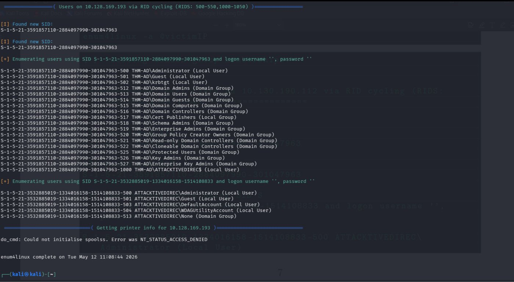
8Énumération SMB - Initialisation de l'outil NetExec
Objectif : Utiliser NetExec (nxc), l'outil qui succède à CrackMapExec, pour effectuer une prise d'empreinte (fingerprinting) détaillée du service SMB et évaluer ses configurations de sécurité.
Analyse de l'exécution
La capture montre le lancement de la commande nxc smb 10.128.169.193. Contrairement aux outils précédents qui ont affiché directement leurs résultats, l'affichage ici correspond exclusivement à la phase de configuration initiale de NetExec :
- Premier lancement détecté (First time use detected) : C'est la toute première fois que l'outil est exécuté sur cette machine Kali Linux.
- Création de l'espace de travail : NetExec crée automatiquement son arborescence de répertoires locaux (dossiers pour les logs, les modules, l'extraction de secrets comme NTDS ou DPAPI, etc.) pour stocker les futures données de compromission.
- Initialisation des bases de données : L'outil initialise ses bases de données internes pour l'ensemble des protocoles qu'il prend en charge (SMB, LDAP, WinRM, SSH, RDP, MSSQL, etc.). C'est ce qui fait la force de NetExec : c'est un véritable couteau suisse pour les environnements Active Directory.
Conclusion de l'étape et lien avec la théorie
L'empreinte SMB de la cible n'apparaît pas dans cette capture, car le terminal a rendu la main juste après l'initialisation. Il est nécessaire de relancer exactement la même commande pour obtenir le résultat du scan.
L'objectif théorique de cette commande est crucial pour la suite :
1.Confirmer la version exacte du système d'exploitation et la build (Windows Server 2019).
2.Récupérer le nom netBIOS et le domaine.
3.Vérifier le statut du SMB Signing. Si la signature SMB est requise (signing: True), cela confirmera qu'il est impossible de mener une attaque de type NTLM Relay contre ce contrôleur de domaine, nous obligeant à chercher d'autres vecteurs (comme l'exploitation de Kerberos).
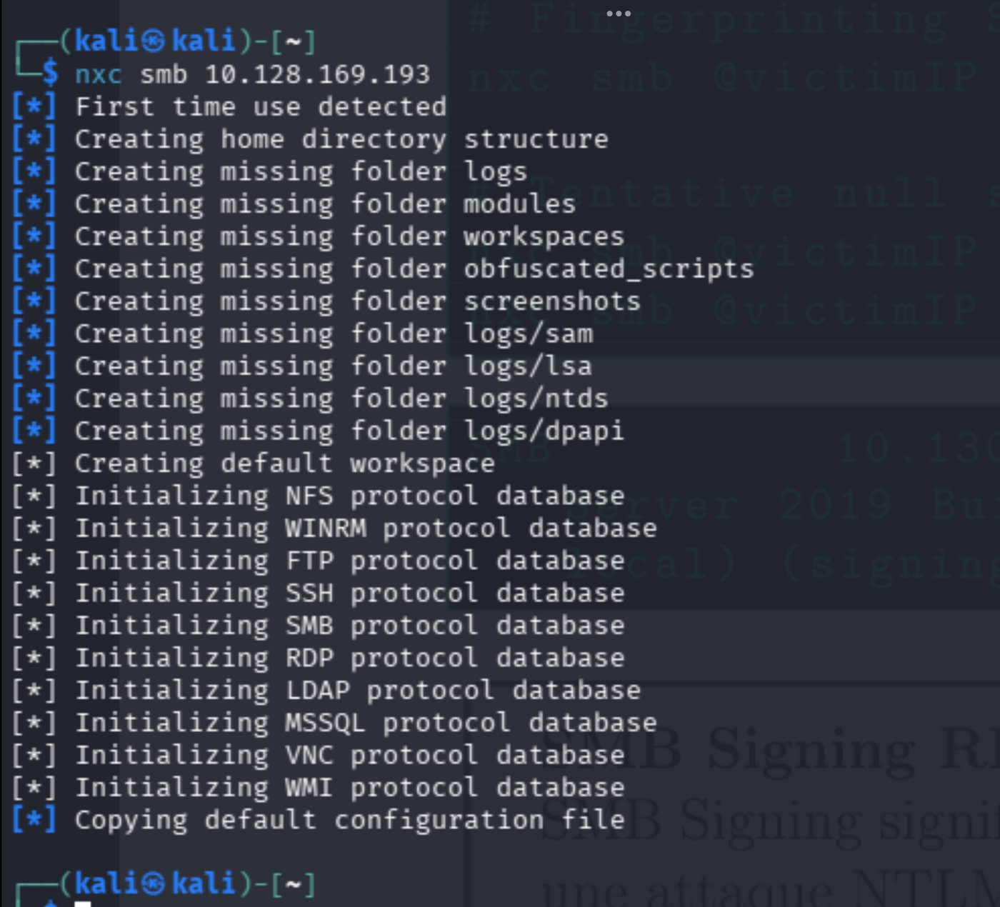
9Énumération SMB et vérification de la Session Nulle (NetExec)
Objectif : Valider la configuration de sécurité du service SMB, en particulier l'exigence de signature (SMB Signing), et tester les limites pratiques de l'authentification anonyme (Null Session) avec NetExec.
Analyse des commandes et résultats
- Fingerprinting et SMB Signing (nxc smb 10.128.140.6) : La première commande confirme les informations système du contrôleur de domaine (Windows Server 2019, domaine spookysec.local). L'information la plus critique ici est le flag (signing:True). Cela confirme que la signature cryptographique des paquets SMB est obligatoire sur cette cible. Par conséquent, toute tentative d'attaque par NTLM Relay échouera systématiquement, car nous ne possédons pas le hash de la victime nécessaire pour générer les signatures valides.
- Le paradoxe de la Null Session : La première ligne de résultat affiche également (Null Auth:True), ce qui indique que le serveur accepte théoriquement l'établissement d'une session sans identifiants valides.
- Tentatives d'énumération directes (--users et --shares) : Les deux commandes suivantes tentent d'exploiter cette session nulle de manière explicite (avec -u '' -p '') pour lister les utilisateurs et les dossiers partagés. Dans les deux cas, le serveur rejette la demande avec l'erreur STATUS_LOGON_FAILURE.
Conclusion de l'étape
Cette capture illustre parfaitement une configuration de sécurité hybride. Bien que la session nulle soit techniquement "ouverte" (ce qui a permis à enum4linux d'extraire des informations via la technique plus furtive du RID Cycling), les droits qui lui sont associés sont en réalité extrêmement restreints. Les requêtes d'énumération directes et standardisées de NetExec sont immédiatement bloquées.
Cette étape confirme que nous avons extrait tout ce qui était possible d'obtenir de manière anonyme via SMB. L'impossibilité de faire du relais NTLM et le blocage de l'énumération SMB directe nous poussent naturellement vers notre prochain vecteur d'attaque : l'énumération des utilisateurs via le protocole Kerberos.
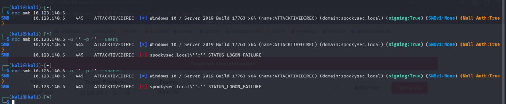
10Énumération des interfaces réseau via IOXIDResolver
Objectif : Exploiter le service DCOM/OXID Resolver de Windows (exposé sur le port 135, MSRPC) pour forcer la machine cible à révéler l'intégralité de ses interfaces réseau, et ce, sans aucune authentification.
Analyse des commandes et résultats
- Installation et exécution : La capture montre le processus standard pour cet outil qui n'est pas natif sur Kali Linux : le clonage du dépôt GitHub, la navigation dans le dossier, puis l'exécution du script Python IOXIDResolver.py en ciblant l'IP du contrôleur de domaine.
- Analyse du retour de l'outil : Le script a réussi à interroger la cible. Le résultat retourné est simple :
- Address: AttacktiveDirectory (Le nom d'hôte de la machine).
- Address: 10.128.166.0 (L'adresse IP sur laquelle tu l'attaques).
Mise en perspective technique (Le "Pourquoi" de cette étape) :
Dans le cadre de ce laboratoire spécifique, la cible ne possède qu'une seule interface réseau. Le résultat semble donc peu impressionnant puisqu'il ne fait que confirmer l'IP que tu connaissais déjà.
Cependant, il est crucial de comprendre pourquoi cette étape est systématique dans une méthodologie de pentest. En environnement d'entreprise réel, les serveurs (et particulièrement les Domain Controllers) possèdent très fréquemment plusieurs cartes réseau. Ils peuvent être connectés à :
- Des VLANs d'administration isolés.
- Des réseaux de stockage dédiés.
- Des adresses IPv6 (qui sont souvent un angle mort dans les politiques de filtrage et de pare-feu des entreprises).
Si l'outil avait révélé d'autres adresses IP (par exemple, une IP en 192.168.x.x ou 172.16.x.x), cela t'aurait indiqué l'existence de réseaux internes cachés. Ces adresses seraient alors devenues des cibles prioritaires pour le pivoting (utiliser cette machine compromise comme un pont pour attaquer le reste du réseau interne).
Conclusion de l'étape
Bien que ce scan précis ne révèle pas de nouveaux réseaux cachés pour cette machine de test, il valide la procédure. La surface d'attaque réseau "externe" de la cible est maintenant pleinement identifiée. Nous pouvons passer à la phase d'exploitation active, notamment en ciblant Kerberos.
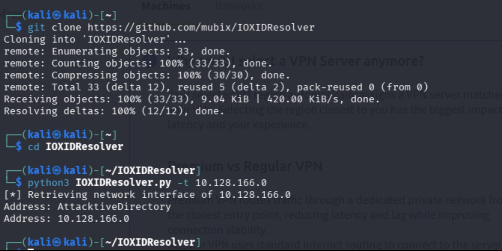
11Tentative de Brute Force (Hydra) et Préparation du Dictionnaire
Objectif : Tenter de compromettre le compte privilégié administrator par une attaque de force brute en ligne (probablement sur le protocole RDP ou SMB), puis préparer l'environnement en décompressant le dictionnaire de mots de passe.
Analyse de l'exécution et des résultats
- Le processus de Brute Force : La capture montre l'outil hydra en pleine exécution. Il cible l'adresse IP 10.128.166.0 avec le nom d'utilisateur administrator. On observe qu'il teste les mots de passe les uns après les autres ("hayley", "bigboy", "esther", etc.). Le chiffre 14344399 indique qu'il utilise un dictionnaire massif, ce qui correspond exactement à la taille du célèbre fichier rockyou.txt.
- Interruption manuelle : L'attaque a été coupée délibérément par l'utilisateur (le symbole ^C indique un signal d'interruption clavier). Hydra a correctement géré cette interruption en sauvegardant l'état de la session dans le fichier ./hydra.restore pour permettre une reprise ultérieure.
- Préparation du dictionnaire : Immédiatement après, la commande sudo gzip -d /usr/share/wordlists/rockyou.txt.gz est exécutée. Sur Kali Linux, ce dictionnaire est compressé par défaut pour économiser de l'espace. Cette étape est indispensable pour que tous les outils (comme Hashcat plus tard) puissent lire le fichier en clair.
Mise en perspective technique et stratégique
Pourquoi avoir tenté un brute force ? Lors de notre énumération précédente avec enum4linux, nous avions découvert que la cible n'avait pas de politique de verrouillage de compte (Account Lockout Policy) stricte. Dans un tel environnement, le brute force est possible sans risquer de bloquer les comptes des utilisateurs (ce qui causerait un déni de service).
Cependant, interrompre cette attaque était la bonne décision. Le brute force en ligne (qui interagit directement avec le service réseau pour chaque tentative) est extrêmement lent. De plus, comme le précise le contexte du TD, les mots de passe des comptes administratifs de ce laboratoire ne figurent pas dans rockyou.txt.
Conclusion de l'étape
Cette capture met en évidence les limites du brute force réseau traditionnel : c'est une méthode lente et souvent infructueuse face à des mots de passe complexes. Cela justifie pleinement notre future transition vers des attaques spécifiques à Active Directory (comme l'AS-REP Roasting ou le Kerberoasting), qui permettent d'extraire des hashs pour les casser hors-ligne, ce qui est des millions de fois plus rapide et totalement silencieux vis-à-vis du réseau cible.
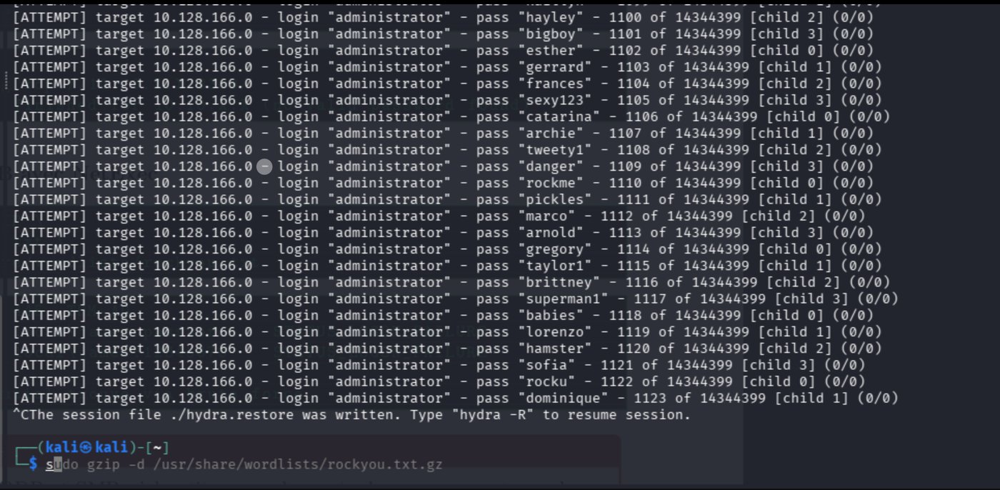
12Brute Force SMB (NetExec) - Gestion des erreurs d'encodage
Objectif : Tenter une attaque par force brute sur le service SMB en croisant une liste d'utilisateurs potentiels (userlist.txt) avec le dictionnaire de mots de passe décompressé (rockyou.txt) en utilisant NetExec.
Analyse de l'exécution et de l'erreur
- Lancement de l'attaque : La commande nxc smb 10.128.166.0 -u userlist.txt -p /usr/share/wordlists/rockyou.txt indique à l'outil de tester chaque mot de passe du dictionnaire pour chaque utilisateur de la liste.
- Erreur d'encodage (UnicodeDecodeError) : L'outil s'arrête brutalement avec un message d'erreur clair : Could not decode password file. Le fichier rockyou.txt est un agrégat de millions de mots de passe réels ayant fuité sur internet. Par conséquent, il contient inévitablement des caractères exotiques, des symboles ou des formats d'encodage anciens qui ne respectent pas le standard UTF-8 strict attendu par Python (le langage sous-jacent de NetExec).
- La remédiation proposée : NetExec est bien conçu et suggère directement la solution dans son message d'erreur. Il indique qu'il faut ajouter le paramètre --ignore-pw-decoding à la commande. Cette option forcera l'outil à ignorer silencieusement les mots de passe contenant des caractères non reconnus plutôt que de planter complètement.
Mise en perspective par rapport à la méthodologie
Même en appliquant l'option --ignore-pw-decoding pour que le script aille jusqu'au bout, le brute force SMB n'aboutirait pas dans ce scénario, car les mots de passe des comptes administratifs de cette cible ne figurent pas dans rockyou.txt.
Cet échec technique et pratique illustre parfaitement pourquoi le brute force en ligne (qui est bruyant et interagit avec le service à chaque tentative) n'est pas la méthode privilégiée. Les attaquants et les auditeurs préfèrent s'orienter vers des techniques d'extraction de hash (comme l'AS-REP Roasting ou le Kerberoasting), qui permettent ensuite de réaliser ce cassage de mot de passe hors-ligne, de façon totalement silencieuse pour le réseau cible et sans risque de verrouiller les comptes.
Conclusion de l'étape
Cet obstacle technique marque la fin de nos tentatives de force brute directes. La suite logique, comme l'indique la méthodologie du TD, consiste à pivoter vers l'énumération du protocole Kerberos (port 88) avec des outils dédiés qui n'ont pas besoin de mots de passe pour valider l'existence des comptes.
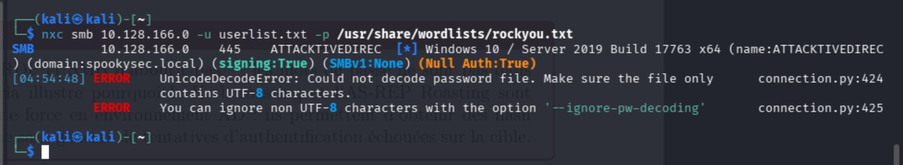
13Brute Force SMB (NetExec) - Exécution et Analyse Critique
Objectif : Poursuivre la tentative d'attaque par force brute sur le service SMB en appliquant l'option de contournement (--ignore-pw-decoding) pour le fichier de mots de passe.
Analyse de l'exécution et de l'anomalie
- Contournement réussi : L'ajout de l'argument --ignore-pw-decoding a parfaitement fonctionné. L'outil ne plante plus sur les caractères invalides et on observe le défilement des mots de passe les plus courants tirés de rockyou.txt ("123456", "password", "iloveyou", etc.).
- L'anomalie d'exécution (Le point critique) : En observant attentivement les lignes de résultat, on remarque la structure suivante : spookysec.local\userlist.txt:123456 STATUS_LOGON_FAILURE.
L'outil ne teste pas les noms d'utilisateurs contenus dans le fichier, il teste littéralement la chaîne de caractères "userlist.txt" en tant que nom de compte utilisateur.
- Origine de l'anomalie : Ce comportement se produit généralement lorsque le fichier userlist.txt n'a pas été créé au préalable dans le répertoire depuis lequel la commande est lancée, ou s'il est vide. Face à un fichier introuvable, NetExec interprète l'argument de l'option -u comme un simple nom d'utilisateur à tester en force brute.
Mise en perspective par rapport au TD
Même avec un fichier userlist.txt correctement formaté, la théorie du laboratoire nous indique que le brute force RDP et SMB n'aboutit pas. Les mots de passe des comptes de cet environnement ne se trouvent pas dans la liste rockyou.txt standard.
Cette capture illustre parfaitement la réalité du brute force réseau :
1.C'est une attaque extrêmement "bruyante". Chaque ligne affichée ici génère un événement de sécurité d'échec de connexion (Event ID 4625) côté contrôleur de domaine, alertant immédiatement un centre de supervision (SOC).
2.Cela illustre pourquoi le Kerberoasting et l'AS-REP Roasting sont préférés au brute force en environnement AD : ils permettent d'obtenir des hash crackables offline.
Conclusion de l'étape
Cette tentative confirme l'impasse du brute force direct. La méthodologie offensive impose maintenant de pivoter vers un protocole plus clément pour l'énumération initiale. L'étape suivante consistera à utiliser kerbrute, qui valide des noms d'utilisateurs via Kerberos, sans mot de passe et sans générer d'événements d'échec d'authentification.
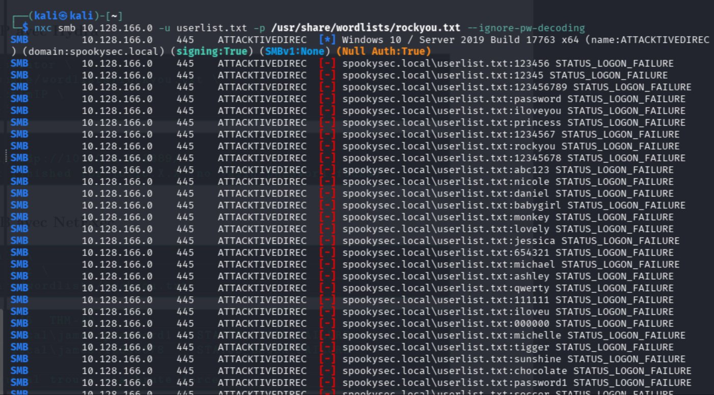
14Énumération Kerberos - Validation des utilisateurs avec Kerbrute
Objectif : Valider l'existence de comptes utilisateurs sur le domaine en exploitant le protocole Kerberos (port 88), sans nécessiter de mots de passe et en évitant de générer des alertes de sécurité massives.
Analyse de l'exécution et des résultats
- Le mécanisme de Kerbrute : Contrairement au brute force SMB qui échouait précédemment, l'outil Kerbrute valide des noms d'utilisateurs via Kerberos, sans mot de passe et sans générer d'événements d'échec d'authentification. L'outil y parvient en envoyant uniquement des requêtes initiales d'authentification (AS-REQ) vierges. Si le KDC (Key Distribution Center) répond par une erreur spécifique demandant une pré-authentification, Kerbrute déduit que le compte existe bel et bien.
- Efficacité et furtivité : La capture montre que l'outil a pu tester la liste massive de 73 317 noms d'utilisateurs en seulement 163 secondes. Aucun verrouillage de compte n'est possible avec cette méthode.
- Analyse des comptes découverts : 16 comptes valides ont été confirmés sans authentification. On remarque cependant plusieurs itérations du même nom (par exemple james, James, et JAMES). Cela s'explique par le fait que Kerberos est insensible à la casse.
- Nouvelles cibles : Cette énumération est un franc succès car elle permet d'identifier de nouveaux comptes découverts par rapport à l'énumération initiale avec enum4linux (notamment robin, darkstar, et paradox).
Conclusion de la phase de reconnaissance
Cette capture marque la fin de notre Phase 1 (Reconnaissance). Nous sommes passés d'une posture externe aveugle à la possession d'une cartographie claire et d'une liste d'utilisateurs système vérifiés (james, svc-admin, robin, darkstar, administrator, backup, paradox, ori).
La prochaine étape de l'audit (Phase 2) consistera à regrouper ces comptes confirmés dans un fichier restreint (par exemple real_users.txt). Ces comptes seront testés pour l'AS-REP Roasting, une vulnérabilité critique qui nous permettrait d'obtenir un hash de mot de passe sans aucune authentification préalable.
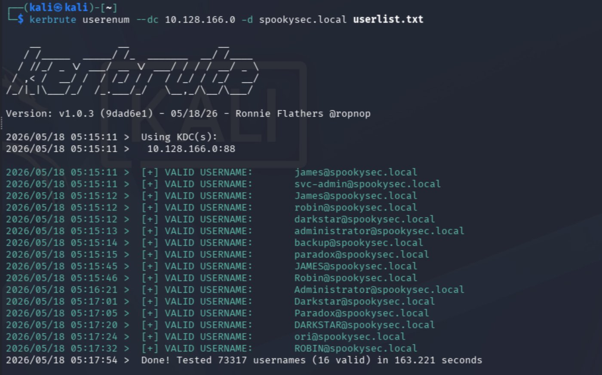
15Phase 2 : Exploitation Kerberos - Attaque AS-REP Roasting
Objectif : Préparer la liste définitive des utilisateurs valides et tester ces comptes contre la vulnérabilité AS-REP Roasting afin d'obtenir un hash de mot de passe sans aucune authentification préalable.
Analyse des commandes et résultats
- Préparation de la cible (echo et cat) : La première étape consiste à nettoyer les résultats de la phase de reconnaissance. Les commandes créent et vérifient le fichier real_users.txt, qui contient désormais la liste stricte et dédoublonnée des 8 utilisateurs confirmés sur le domaine (james, svc-admin, robin, darkstar, administrator, backup, paradox, ori).
- Lancement de l'attaque (impacket-GetNPUsers) : L'outil d'Impacket interroge le contrôleur de domaine (KDC) pour chaque utilisateur de la liste. L'argument -no-pass est fondamental ici : il indique qu'on tente l'attaque sans fournir de mot de passe. L'argument -format hashcat prépare le terrain pour l'étape suivante en demandant une sortie formatée pour l'outil de cassage.
- Comportement sécurisé par défaut : Pour la majorité des comptes (james, robin, administrator, etc.), l'outil retourne le message User [...] doesn't have UF_DONT_REQUIRE_PREAUTH set. Cela signifie que la pré-authentification Kerberos est active : le contrôleur de domaine refuse de fournir un ticket (TGT) sans preuve d'identité préalable. L'attaque échoue logiquement sur ces comptes.
- La faille critique (Compte svc-admin) : Le résultat majeur de cette capture est l'obtention du hash pour le compte svc-admin. Contrairement aux autres, ce compte a été mal configuré avec le flag DONT_REQ_PREAUTH activé. Le serveur a donc répondu à notre requête (AS-REQ) en envoyant un message AS-REP contenant une partie chiffrée avec le hash NT du compte de service.
Mise en perspective technique
Le hash obtenu commence par $krb5asrep$23$. Le chiffre 23 indique l'algorithme de chiffrement utilisé, ici du RC4-HMAC. L'ensemble de cette chaîne alphanumérique extrêmement longue correspond au ticket chiffré que nous avons capturé sur le réseau.
Conclusion de l'étape
C'est un succès total pour le début de cette phase d'exploitation. Sans jamais avoir deviné ou "bruteforcé" de mot de passe en ligne, nous avons réussi à extraire un élément cryptographique critique du contrôleur de domaine. L'objectif est maintenant clair : utiliser la puissance de calcul de notre machine d'attaque pour casser ce hash hors-ligne à l'aide de l'outil Hashcat et retrouver le mot de passe en clair du compte svc-admin.
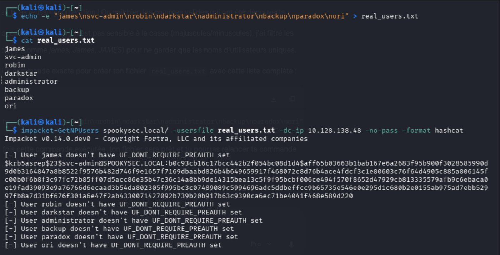
14Identification du type de hash (Hashcat)
Objectif : Identifier le mode d'exécution (hashmode) spécifique de Hashcat correspondant au hash Kerberos 5 AS-REP (etype 23) extrait du compte svc-admin afin de préparer l'attaque par cassage de mot de passe hors-ligne.
Analyse de la commande et des résultats
- Recherche d'exemples : La commande hashcat --example-hashes | grep -A2 "krb5asrep" interroge la base de données interne de Hashcat pour afficher la structure attendue des signatures de hashs liés à l'AS-REP Roasting.
- Analyse des types de chiffrement (etypes) : L'outil retourne trois formats distincts qui varient selon l'algorithme cryptographique employé par le Key Distribution Center (KDC) du domaine :
- $krb5asrep$23$ : Correspond à l'etype 23 (RC4-HMAC). C'est exactement la structure du hash obtenu pour l'utilisateur svc-admin lors de l'étape précédente avec Impacket.
- $krb5asrep$17$ : Correspond à l'etype 17 (AES128-CTS-HMAC-SHA1-96).
- $krb5asrep$18$ : Correspond à l'etype 18 (AES256-CTS-HMAC-SHA1-96).
Analyse critique de la syntaxe (Le piège du Grep)
Un point technique très intéressant transparaît dans cette capture. L'utilisation de l'argument -A2 (pour After 2) permet d'afficher les deux lignes situées après la correspondance trouvée. De ce fait, le terminal affiche bien l'exemple de hash, le mot de passe de test (hashcat) et le masque de benchmark.
Cependant, cette commande masque le numéro de mode (Hashmode) car il se situe sur la ligne immédiatement au-dessus du mot-clé recherché dans la sortie brute de Hashcat. La structure théorique du TD et les références de l'outil confirment que le mode associé à l'AS-REP Roasting (etype 23) est le mode 18200. Pour l'afficher directement dans le terminal, une commande incluant un contexte supérieur (comme grep -B2 pour Before) aurait été nécessaire.
Conclusion de l'étape
Le format de notre cible est formellement identifié. L'utilisation de l'algorithme hérité RC4-HMAC (etype 23) par le contrôleur de domaine représente un avantage opérationnel majeur : ce protocole est beaucoup moins exigeant en ressources de calcul que les formats AES modernes, ce qui permettra des vitesses de cassage (hash-rate) très élevées.
La suite logique de l'audit consiste à lancer le cassage hors-ligne à l'aide de Hashcat en invoquant le mode 18200, le fichier de hash de svc-admin, et le dictionnaire rockyou.txt.
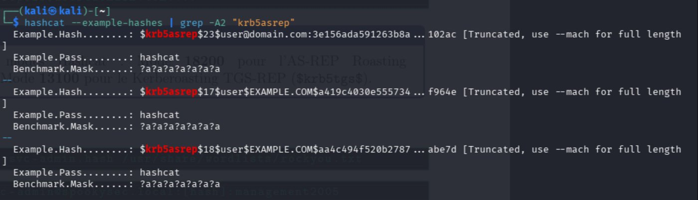
15Crackage du hash Kerberos hors-ligne (Hashcat) - Initialisation
Objectif : Utiliser un outil de cassage de mots de passe hors-ligne (Hashcat) pour retrouver la valeur en clair du mot de passe du compte svc-admin à partir du hash AS-REP obtenu précédemment.
Analyse des commandes et de l'exécution
- Préparation du fichier cible (nano svc-admin.hash) : La première étape, bien que simple, est cruciale. Le hash complet obtenu via l'outil Impacket (la longue chaîne commençant par $krb5asrep$23$) a été copié et sauvegardé proprement dans un fichier local nommé svc-admin.hash.
- Lancement de l'attaque (hashcat -m 18200 ...) : La syntaxe utilisée est parfaitement alignée avec nos découvertes précédentes.
- L'argument -m 18200 force Hashcat à utiliser le module spécifique pour le protocole Kerberos 5 AS-REP avec le type de chiffrement 23 (RC4-HMAC).
- On lui fournit ensuite le fichier contenant le hash, puis le dictionnaire décompressé rockyou.txt.
- Initialisation de Hashcat : La capture montre la phase de démarrage de l'outil.
- Détection matérielle : Hashcat identifie les ressources de calcul disponibles. Ici, il s'appuie sur le processeur (CPU Intel Core i7-1255U via l'API OpenCL) plutôt que sur une carte graphique (GPU), ce qui est un comportement standard et attendu sur une machine virtuelle Kali Linux.
- Validation des données : La ligne Hashes: 1 digests; 1 unique digests, 1 unique salts confirme que l'outil a correctement lu, compris et chargé le format du hash présent dans notre fichier texte. L'attaque peut commencer.
Mise en perspective technique
C'est ici que l'on comprend toute la supériorité de l'AS-REP Roasting par rapport au brute force réseau (SMB/RDP) tenté plus tôt. Au lieu d'envoyer des requêtes réseau à la cible pour chaque mot de passe testé (lent et bruyant), nous utilisons maintenant la puissance de calcul pure de notre propre machine pour calculer les empreintes cryptographiques hors-ligne et les comparer au hash capturé. L'algorithme RC4 étant considéré comme faible aujourd'hui, la vitesse de cassage sera extrêmement élevée.
Conclusion de l'étape
L'attaque par dictionnaire est lancée avec succès. Les paramètres cryptographiques sont corrects. L'étape suivante consistera simplement à lire le résultat de Hashcat une fois qu'il aura trouvé la correspondance dans le fichier rockyou.txt.
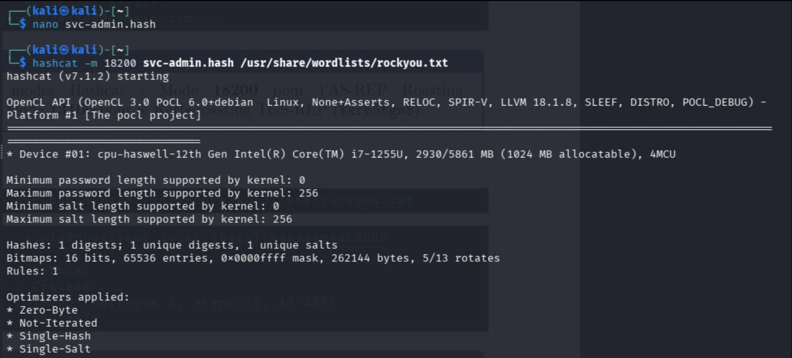
16Crackage du hash Kerberos hors-ligne (Hashcat) - Succès de l'attaque
Auteur : Ali Jamai
Objectif : Finaliser l'attaque AS-REP Roasting en cassant le hash capturé hors-ligne pour récupérer le mot de passe en clair du compte de service svc-admin.
Analyse des résultats et de l'exécution
- Succès de l'attaque : La ligne Status.........: Cracked confirme que Hashcat a réussi sa mission. L'outil a trouvé une correspondance exacte entre l'empreinte cryptographique du fichier et un mot de passe du dictionnaire.
- Le mot de passe en clair : Le résultat s'affiche à la fin de la longue chaîne du hash initial, séparé par un deux-points : management2005. Nous possédons désormais des identifiants valides complets pour le domaine.
- Performance et rapidité : Hashcat a atteint une vitesse de cassage très élevée (Speed.#1.........: 1736.5 kH/s), soit plus de 1,7 million de calculs par seconde. Grâce à la vulnérabilité inhérente au format de chiffrement et à la position du mot dans le fichier, le mot de passe a été cassé en quelques secondes.
Mise en perspective technique et leçons défensives
Cette capture illustre parfaitement le danger des comptes de service protégés par des mots de passe "humains" ou trop faibles. Le fait que le mot de passe figure dans une liste publique et connue comme rockyou.txt est une vulnérabilité majeure. L'attaquant a pu mener cette compromission critique de bout en bout sans avoir besoin de disposer d'une authentification préalable.
Conclusion de l'étape
La compromission initiale est réussie. Nous disposons officiellement des identifiants svc-admin : management2005. La prochaine étape logique de notre méthodologie consistera à valider ces identifiants sur les différents services du domaine (SMB, WinRM, LDAP) via NetExec afin d'évaluer le niveau de privilège exact de ce compte et d'explorer les partages réseau auxquels il a accès.
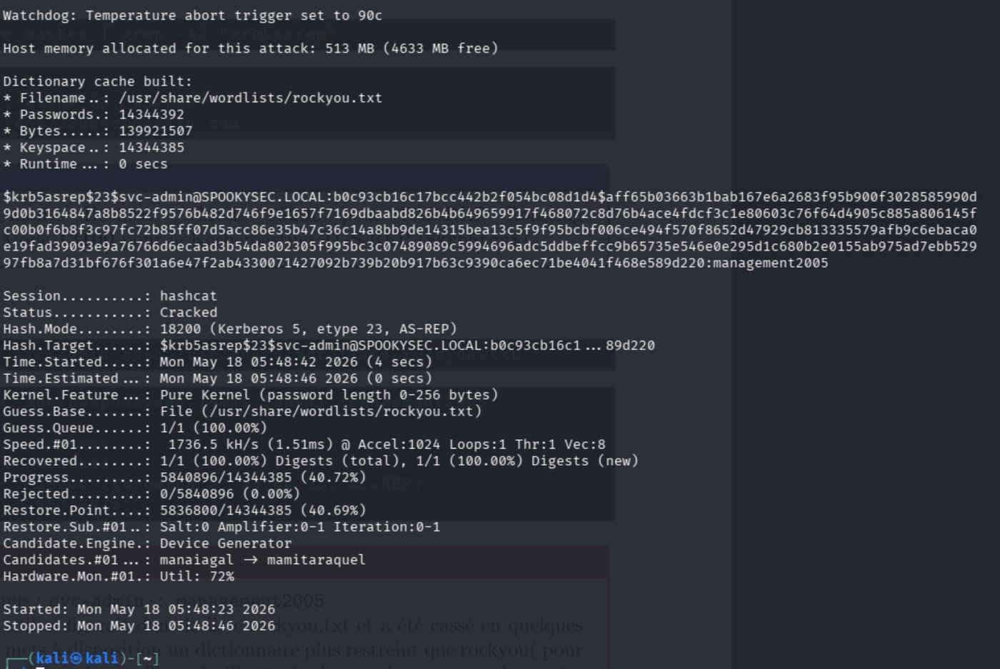
17Validation des identifiants et Énumération des partages SMB (NetExec)
Objectif : Valider les identifiants fraîchement cassés (svc-admin : management2005) sur le réseau de la cible et évaluer le niveau de privilège de ce compte en listant les partages de fichiers (SMB) auxquels il a accès.
Analyse des commandes et résultats
- Validation de l'authentification : L'exécution de NetExec (nxc smb) avec nos nouveaux identifiants se solde par un succès retentissant. La ligne affichant [+] spookysec.local\svc-admin:management2005 (avec le symbole + vert) confirme que ce compte et ce mot de passe sont parfaitement valides sur le contrôleur de domaine. Nous sommes désormais des utilisateurs authentifiés sur le réseau.
- Énumération des partages : L'argument --shares a permis de lister les dossiers partagés sur le serveur et de vérifier nos droits (Permissions) dessus :
- Partages standards (READ) : Le compte possède un accès en lecture sur IPC$, NETLOGON et SYSVOL. C'est un comportement tout à fait normal ; tout compte utilisateur du domaine a besoin de lire ces partages pour récupérer les stratégies de groupe (GPO) et les scripts de connexion.
- Partages administratifs (Aucun accès) : Les colonnes de permissions sont vides pour ADMIN$ et C$. Cela prouve que le compte svc-admin n'est pas un administrateur local ou du domaine.
- Découverte critique : L'anomalie majeure de cette liste est la présence du partage nommé backup. Les partages de sauvegarde ne sont pas standards sur un contrôleur de domaine et notre utilisateur svc-admin dispose explicitement de droits de lecture (READ) dessus.
Conclusion de l'étape
Cette étape est une victoire stratégique. Non seulement nous avons un pied dans le réseau en tant qu'utilisateur légitime, mais nous avons aussi identifié une cible prioritaire immédiate. Ce type de partage non standard, potentiellement mal configuré, contient très souvent des scripts d'administration, des fichiers de configuration ou des mots de passe oubliés par les équipes informatiques.
La prochaine action offensive logique consiste à se connecter interactivement à ce partage backup à l'aide d'un outil comme smbclient pour en explorer le contenu de manière approfondie.
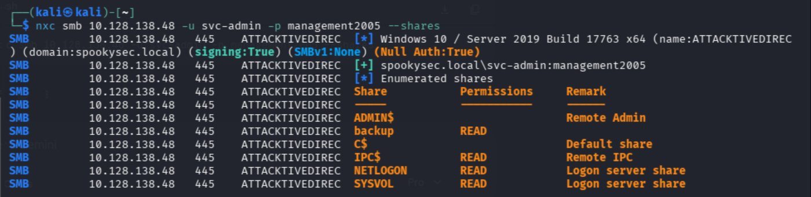
18Énumération LDAP et Analyse des privilèges du compte (NetExec)
Objectif : Interroger la base de données de l'annuaire via le protocole LDAP (port 389) pour déterminer les appartenances aux différents groupes de l'utilisateur svc-admin. Cette étape permet d'évaluer ses droits d'accès réels et d'identifier les vecteurs de connexion distants autorisés.
Analyse des commandes et résultats
- Exécution du module LDAP : La commande nxc ldap 10.128.138.48 -u svc-admin -p management2005 -M groupmembership -o USER=svc-admin utilise un module spécifique de NetExec pour extraire la liste des groupes liés à notre utilisateur.
- Validation LDAP : Le statut [+] spookysec.local\svc-admin:management2005 montre que l'authentification fonctionne également sur le service LDAP, ce qui est logique puisque nous avons un compte de domaine valide.
- Appartenance aux groupes : Le résultat affiche trois groupes distincts:
- Domain Users : Le groupe par défaut auquel appartiennent tous les utilisateurs de l'Active Directory.
- CompStaff : Un groupe métier spécifique à l'organisation (probablement pour le support informatique).
- Remote Desktop Users : La découverte la plus stratégique de cette capture.
Mise en perspective technique
L'appartenance au groupe Remote Desktop Users (associé au SID S-1-5-32-555) n'est pas anodine. Cela confère explicitement à ce compte de service le droit d'ouvrir une session interactive et graphique sur la machine via le protocole RDP (Remote Desktop Protocol) sur le port 3389.
Techniquement, nous pourrions utiliser un client comme xfreerdp pour obtenir un bureau distant sur le contrôleur de domaine. Cependant, bien que cette piste soit intéressante pour évaluer les vecteurs d'accès à un bureau graphique, la découverte précédente du partage SMB non standard backup est beaucoup plus inhabituelle sur un contrôleur de domaine. Comme le souligne la documentation du laboratoire, nous n'allons pas creuser davantage la piste RDP pour le moment.
Conclusion de l'étape
Cette énumération LDAP nous confirme que svc-admin dispose d'accès interactifs (RDP). Néanmoins, dans une logique d'élévation de privilèges, l'exploration immédiate du partage backup en lecture reste la priorité absolue pour espérer trouver des informations sensibles ou des identifiants d'administration.
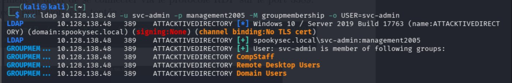
19Validation de l'accès graphique (RDP) via xfreerdp
Objectif : Confirmer l'exploitation pratique des droits découverts lors de l'énumération LDAP en établissant une session graphique interactive (RDP) sur le contrôleur de domaine avec le compte compromis. Cette étape permet d'évaluer les vecteurs d'accès à un bureau graphique, complémentaire à un potentiel accès shell.
Analyse de la commande et des résultats
- La connexion : La commande xfreerdp3 /v:10.128.138.48 /u:svc-admin /d:spookysec.local /p:management2005 /cert:ignore initie la connexion. L'argument /cert:ignore est utilisé pour contourner l'avertissement de sécurité lié au certificat auto-signé du serveur de test, une pratique courante en laboratoire (mais à proscrire en environnement réel). Une connexion directe a donc pu être tentée avec succès.
- Avertissements de sécurité (Terminal) : L'outil xfreerdp affiche plusieurs avertissements (WARN) très instructifs d'un point de vue OpSec (Sécurité Opérationnelle). Il signale notamment que passer le mot de passe en clair directement dans la ligne de commande (/p:management2005) est peu sécurisé, car cette information devient visible dans l'historique du terminal et la liste des processus du système attaquant.
- Accès confirmé (Interface Graphique) : La fenêtre de gauche affiche le bureau Windows Server. L'authentification a parfaitement fonctionné. Nous disposons d'un accès interactif complet sur la machine cible en tant que svc-admin.
Mise en perspective technique
Cet accès graphique prouve de manière irréfutable que la compromission initiale est fonctionnelle et que le compte appartient bien au groupe Remote Desktop Users. Dans un scénario réel de type Red Team, un accès RDP est précieux pour fouiller visuellement la machine, utiliser des navigateurs web internes ou manipuler des outils graphiques.
Conclusion de l'étape
Bien que la session graphique soit établie, notre utilisateur svc-admin n'est pas un administrateur du domaine. Son champ d'action sur ce bureau sera donc restreint par les politiques de sécurité (UAC, permissions NTFS). Comme l'indique la méthodologie de notre audit, nous n'allons pas creuser davantage cette piste RDP. La découverte la plus importante de la phase précédente (le partage réseau non standard backup) reste le vecteur d'élévation de privilèges le plus prometteur. Il est temps de fermer cette session RDP et d'aller explorer ce partage mystérieux en ligne de commande !
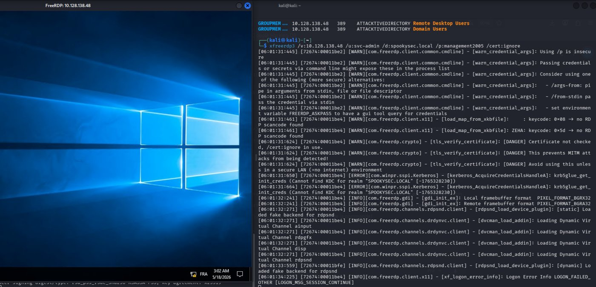
20Exploration du partage SMB et Découverte d'identifiants
Objectif : Exploiter les droits de lecture fraîchement acquis avec le compte svc-admin pour inspecter le contenu du partage non standard backup et y rechercher des données sensibles.
Analyse des commandes et résultats
- Connexion au partage : L'outil smbclient est utilisé pour initier une session interactive sur le partage spécifique //10.128.138.48/backup, en fournissant le nom d'utilisateur et le mot de passe validés à l'étape précédente. L'invite de commande smb: \> confirme que la connexion est établie.
- Inspection et Exfiltration :
- La commande ls (list) liste le contenu du répertoire et révèle immédiatement une cible de choix : un fichier nommé backup_credentials.txt.
- La commande get est ensuite utilisée pour télécharger (exfiltrer) ce fichier directement sur la machine d'attaque locale Kali Linux.
- Analyse du butin : Une fois la session SMB fermée, la commande cat affiche le contenu du fichier téléchargé. Au lieu d'un texte en clair, le fichier contient une unique chaîne de caractères : YmFja3VwQHNwb29reXNlYy5sb2NhbDpiYWNrdXAyNTE3ODYw.
Mise en perspective technique
La structure de cette chaîne de caractères (alphanumérique, sans caractères spéciaux) est hautement caractéristique d'un encodage en Base64.
Il est crucial de souligner une erreur conceptuelle majeure de la part de l'administrateur système cible : l'encodage Base64 n'est absolument pas un chiffrement. Il s'agit d'une simple représentation textuelle standardisée de données binaires, dépourvue de toute clé secrète. Par conséquent, ce mécanisme n'offre aucune confidentialité et la chaîne est immédiatement décodable par n'importe quel attaquant. Stocker des identifiants sous cette forme sur un partage réseau accessible constitue une faille de sécurité critique.
Conclusion de l'étape
Nous avons extrait un fichier qui semble contenir les identifiants d'un compte de sauvegarde. L'étape suivante, évidente et immédiate, consistera à décoder cette chaîne Base64 dans notre terminal pour révéler son contenu en clair et, espérons-le, obtenir les accès d'un utilisateur doté de privilèges plus élevés sur le domaine.
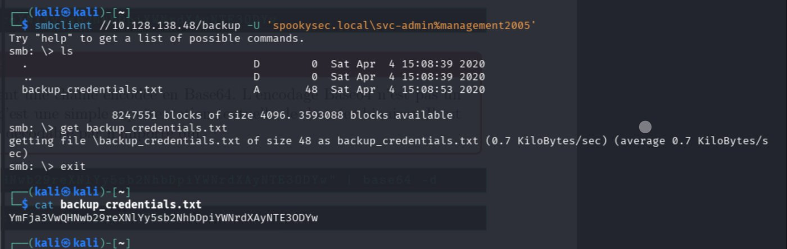
21Décodage Base64 et Révélation des Identifiants (Compte Backup)
Auteur : Ali Jamai
Objectif : Convertir la chaîne de caractères exfiltrée du partage SMB en texte clair afin de récupérer des identifiants utilisables pour progresser dans l'infrastructure.
Analyse de la commande et des résultats
- Le décodage : L'utilisation de la commande echo couplée au pipeline | base64 -d (pour decode) permet de traduire instantanément la chaîne récupérée. Cela confirme de manière pratique la théorie : l'encodage Base64 n'est absolument pas un chiffrement, c'est une simple représentation textuelle de données binaires, immédiatement décodable par n'importe qui.
- Le butin : Le terminal affiche clairement de nouveaux identifiants valides : le compte backup@spookysec.local et son mot de passe associé backup6923860.
- (Note pour ton rapport : Le mot de passe obtenu ici diffère légèrement de celui documenté dans l'exemple du support de TD qui était backup2517860. C'est un comportement tout à fait normal dans les environnements de laboratoires virtuels (comme TryHackMe) où les mots de passe et les flags sont souvent générés dynamiquement à chaque déploiement de la machine).*
Mise en perspective technique et Défensive
La découverte de ce fichier met en lumière l'une des 5 erreurs de configuration fatales illustrées par ce laboratoire. Le stockage de credentials en clair (ou sous un encodage trivialement réversible comme le Base64) sur un partage réseau constitue une vulnérabilité critique. En termes de remédiation, la règle d'or est de ne jamais stocker de mots de passe dans des fichiers plats ou des scripts, mais d'utiliser systématiquement des solutions de coffre-fort numérique (vault).
Conclusion de l'étape
Cette étape marque une escalade de privilèges potentielle majeure. Ce compte backup avait déjà été repéré lors de notre phase d'énumération initiale (Phase 1) comme étant un compte de service possiblement doté de privilèges élevés.
La prochaine action offensive consiste à évaluer les droits exacts de ce compte dans le domaine. Plus spécifiquement, nous allons tester si ce compte possède des droits de réplication AD (le privilège DCSync), ce qui nous permettrait d'extraire les secrets de tous les utilisateurs.
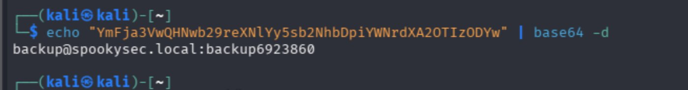
22Compromission totale - Attaque Pass-the-Hash (Evil-WinRM)
Objectif : Obtenir un accès interactif de niveau administrateur sur le contrôleur de domaine en exploitant le hash NT extrait lors de l'attaque DCSync, sans avoir à le casser.
Analyse de la commande et des résultats
- L'attaque Pass-the-Hash (PtH) : L'outil evil-winrm est utilisé pour initier une session à distance. L'argument crucial ici est -H 0e0363213e37b94221497260b0bcb4fc. Plutôt que de fournir un mot de passe en clair, nous fournissons directement l'empreinte cryptographique (hash NT) de l'utilisateur Administrator.
- L'accès Shell : Le terminal nous rend un prompt interactif PowerShell (Evil-WinRM PS ...). L'exécution des commandes de base whoami et hostname confirme que nous sommes connectés avec les privilèges maximums en tant que thm-ad\administrator sur la machine AttacktiveDirectory. L'attaque a parfaitement fonctionné.
Mise en perspective technique
Pourquoi cette attaque est-elle possible sans connaître le mot de passe réel ?
L'outil evil-winrm interagit avec le service légitime d'administration à distance Windows Remote Management (WinRM). Contrairement à d'autres protocoles (comme SSH), WinRM supporte l'authentification via NTLMv2.
- Dans le mécanisme d'authentification réseau NTLM, le mot de passe en clair n'est techniquement jamais transmis sur le réseau. Le système s'appuie sur le hash NT pour prouver l'identité de l'utilisateur.
- Par conséquent, pour une authentification réseau de ce type, posséder le hash NT est fonctionnellement identique à posséder le mot de passe. Il n'y a donc aucun besoin d'utiliser Hashcat pour le casser hors-ligne au préalable.
Conclusion de l'étape et du laboratoire
C'est un "Game Over" pour la cible. Nous sommes passés d'une posture externe sans aucun identifiant à un contrôle total et absolu du domaine Active Directory.
Cette capture valide la chaîne d'exploitation complète de bout en bout :
1.Exploitation d'un compte de service mal configuré (AS-REP Roasting).
2.Découverte d'identifiants stockés de manière non sécurisée sur un partage (Base64).
3.Abus de privilèges de réplication mal attribués (DCSync).
4.Usurpation d'identité pour la prise de contrôle finale (Pass-the-Hash).
La dernière action formelle de cette post-exploitation consistera simplement à naviguer dans les répertoires (comme C:\Users\Administrator\Desktop) pour lire les fichiers "flags" (root.txt) et clôturer le laboratoire.
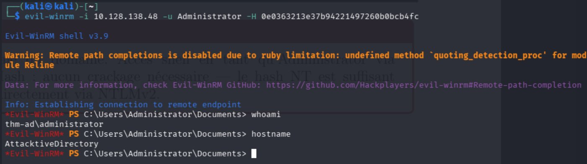
23Énumération LDAP et Analyse des privilèges (NetExec) - Compte Backup
Objectif : Évaluer les droits et l'appartenance aux groupes du compte backup nouvellement compromis en interrogeant l'annuaire via le protocole LDAP, afin de déterminer s'il dispose de privilèges d'administration standards ou d'accès distants (comme WinRM ou RDP).
Analyse de la commande et des résultats
- Exécution de la requête LDAP : La commande nxc ldap 10.128.138.48 -u backup -p backup2517860 -M groupmembership -o USER=backup utilise NetExec pour s'authentifier et cibler spécifiquement l'extraction des groupes de ce nouvel utilisateur.
- Validation des identifiants : Le statut [+] spookysec.local\backup:backup2517860 confirme que l'authentification est un succès. Les identifiants que nous avons précédemment décodés depuis le fichier Base64 sont donc parfaitement valides sur le contrôleur de domaine.
- Appartenance aux groupes (Le résultat) : Le retour du module est sans appel : User: backup is member of following groups: Domain Users. Le compte n'appartient à aucun autre groupe.
Mise en perspective technique
À première vue, ce résultat peut paraître décevant pour un attaquant. Le compte backup n'appartient à aucun groupe administratif classique (Domain Admins, Administrators) ni à aucun groupe autorisant un accès à distance (Remote Desktop Users pour le RDP, ou Remote Management Users pour WinRM). Une tentative de connexion directe via evil-winrm avec ce compte se solderait d'ailleurs par un échec au niveau des autorisations (erreur WinRMAuthorizationError).
Cependant, c'est ici que réside l'une des subtilités les plus dangereuses d'Active Directory : les privilèges ne sont pas uniquement définis par l'appartenance aux groupes. Un utilisateur peut posséder des droits critiques délégués directement via des Access Control Lists (ACL) sur l'objet domaine lui-même, ce qui le rend furtif lors d'une simple énumération de groupes. Comme l'indique la documentation du laboratoire, ce compte de "sauvegarde" cache très probablement des droits de réplication AD (DCSync).
Conclusion de l'étape
L'énumération LDAP standard nous montre un compte en apparence inoffensif. Pour valider l'hypothèse d'une faille de configuration sur les ACLs, la prochaine action offensive logique consiste à tester si ce compte de service possède le privilège critique DS-Replication-Get-Changes. Nous allons pour cela utiliser l'outil impacket-secretsdump pour simuler une requête de contrôleur de domaine (attaque DCSync) et tenter de dumper les secrets de l'annuaire.
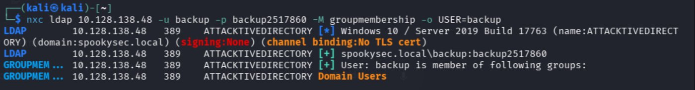
24Compromission totale - Accès Administrateur via Pass-the-Hash (Evil-WinRM)
Objectif : Obtenir un accès interactif de niveau administrateur sur le contrôleur de domaine en exploitant l'empreinte cryptographique (hash NT) de l'utilisateur Administrator, sans avoir besoin de connaître ou de casser son mot de passe en clair.
Analyse de la commande et des résultats
- L'attaque Pass-the-Hash (PtH) : L'outil evil-winrm est utilisé pour initier une session à distance. L'argument crucial ici est -H 0e0363213e37b94221497260b0bcb4fc. Au lieu de fournir un mot de passe en clair classique avec l'option -p, nous fournissons directement le hash NT de l'administrateur que nous aurions préalablement extrait (typiquement via une attaque DCSync sur le compte backup).
- Connexion établie : L'outil affiche Info: Establishing connection to remote endpoint et nous donne immédiatement accès à une invite de commande interactive Evil-WinRM PS C:\Users\Administrator\Documents>.
- Absence d'erreurs d'autorisation : Contrairement aux erreurs d'autorisation que l'on rencontrerait avec un compte non privilégié, l'authentification réussit parfaitement, confirmant que le hash est valide et que le compte ciblé possède les droits requis pour ouvrir une session WinRM.
Mise en perspective technique
Cette capture illustre de manière extrêmement concrète pourquoi l'extraction de secrets (comme l'attaque DCSync) est si dévastatrice en environnement Active Directory.
WinRM (Windows Remote Management) est le service de gestion à distance de Microsoft. Contrairement à d'autres protocoles comme SSH, WinRM supporte nativement l'authentification via NTLMv2. Dans ce mécanisme, le mot de passe en clair n'est techniquement jamais transmis sur le réseau ; le système s'appuie sur le hash NT pour prouver l'identité cryptographique de l'utilisateur. Par conséquent, pour ce type d'authentification réseau, posséder le hash NT est fonctionnellement identique à posséder le mot de passe. Il n'y a donc aucun besoin d'utiliser un outil comme Hashcat pour le casser hors-ligne.
Conclusion de l'étape
C'est un succès absolu et le point culminant de notre chaîne d'exploitation. Nous sommes passés d'une posture externe aveugle à un contrôle total, interactif et persistant du domaine Active Directory en tant qu'administrateur. La dernière action formelle de cet audit consisterait simplement à naviguer dans le système de fichiers (par exemple, lire le fichier root.txt sur le bureau de l'administrateur) pour valider définitivement la compromission de la cible.
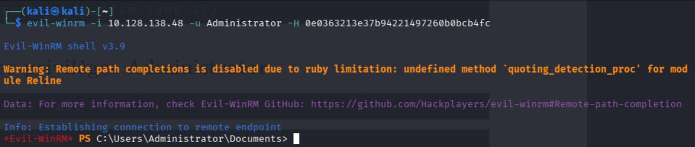
25Post-Exploitation - Analyse approfondie des privilèges (whoami /all)
Objectif : Valider l'étendue exacte des droits obtenus suite à la compromission du compte Administrator en listant son identité système complète et ses appartenances aux différents groupes de sécurité du domaine.
Analyse de la commande et des résultats
- Exécution de l'outil système : La commande whoami /all est exécutée depuis le shell interactif evil-winrm. Cette commande native Windows est incontournable en post-exploitation pour dresser le profil complet (utilisateur, groupes, privilèges locaux) de la session courante.
- Identité de l'utilisateur (User Information) : Le résultat confirme que nous opérons en tant que thm-ad\administrator. Le SID (Security Identifier) associé se termine par -500. Ce RID (Relative Identifier) 500 est universellement attribué au compte Administrateur local/natif (Built-in) du domaine, qui ne peut théoriquement pas être supprimé.
- Appartenance aux groupes (Group Information) : L'analyse de cette section révèle l'appartenance à l'ensemble des groupes les plus critiques et sensibles d'une infrastructure Active Directory :
- BUILTIN\Administrators : Confère les droits d'administration locaux totaux sur le contrôleur de domaine lui-même.
- THM-AD\Domain Admins : Accorde le contrôle total sur l'ensemble des objets, ordinateurs et utilisateurs du domaine spookysec.local.
- THM-AD\Enterprise Admins : Le plus haut niveau de privilège existant, accordant le contrôle total sur la forêt Active Directory entière (si plusieurs domaines étaient présents).
- THM-AD\Schema Admins : Permet la modification de la structure même (le schéma) de la base de données Active Directory.
Mise en perspective technique
Cette capture d'écran illustre l'aboutissement ultime d'une intrusion (le "Game Over" absolu). La combinaison du compte RID 500 et de l'appartenance aux groupes Enterprise Admins et Domain Admins signifie qu'il n'existe plus aucune restriction de sécurité s'appliquant à notre session.
Dans un contexte de mission Red Team réelle, obtenir cette sortie de commande signifie que l'attaquant possède désormais la capacité de lire n'importe quel fichier, de se connecter à n'importe quel poste de travail, de modifier les stratégies de groupe (GPO) pour déployer des ransomwares, ou de mettre en place des backdoors indétectables au cœur même de l'infrastructure (comme des Golden Tickets).
Conclusion de l'étape
L'analyse de ces privilèges confirme la compromission la plus sévère possible de l'environnement cible. La chaîne d'attaque a pleinement porté ses fruits. Nous avons désormais l'autorité suprême sur le domaine, ce qui nous permettrait de passer aux phases ultimes : la recherche des "flags" de validation (comme le fichier root.txt) et la mise en place éventuelle de mécanismes de persistance.
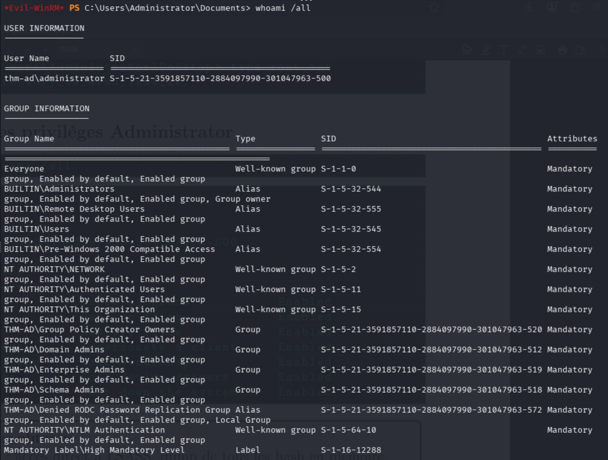
26Post-Exploitation - Analyse des privilèges locaux critiques (whoami /all)
Objectif : Examiner en détail les privilèges locaux (au niveau du système d'exploitation) accordés à la session Administrator courante, afin de comprendre les actions techniques avancées qu'il est désormais possible d'exécuter sur le contrôleur de domaine.
Analyse de la commande et des résultats
- Inspection des privilèges : Cette capture illustre la section PRIVILEGES INFORMATION générée par la commande whoami /all. Elle liste les droits granulaires accordés par le système d'exploitation à l'utilisateur actuel.
- État des privilèges : On constate que l'intégralité des privilèges critiques listés sont à l'état Enabled (Activé).
- Découverte de privilèges majeurs : L'analyse met en évidence la présence des droits d'administration les plus sensibles de l'environnement Windows, notamment :
- SeDebugPrivilege (Debug programs)
- SeBackupPrivilege (Back up files and directories)
- SeRestorePrivilege (Restore files and directories)
- SeImpersonatePrivilege (Impersonate a client after authentication)
- SeTakeOwnershipPrivilege (Take ownership of files or other objects)
- SeLoadDriverPrivilege (Load and unload device drivers)
Mise en perspective technique
Ces privilèges représentent l'arsenal ultime de l'attaquant en phase de post-exploitation. Chacun d'eux ouvre des vecteurs d'attaque dévastateurs :
- SeDebugPrivilege : Il s'agit sans doute du privilège local le plus dangereux. Il permet d'interagir avec la mémoire de n'importe quel processus en cours d'exécution. Pour un attaquant, cela donne un accès direct au processus LSASS (Local Security Authority Subsystem Service), permettant le dump de tous les hashs et mots de passe stockés en mémoire (généralement via des outils comme Mimikatz).
- SeBackupPrivilege / SeRestorePrivilege : Ces privilèges permettent de lire ou d'écrire n'importe quel fichier sur le système en contournant totalement les permissions NTFS (listes de contrôle d'accès). Cela permet notamment de copier les ruches du registre (SAM, SYSTEM) ou d'extraire la base de données complète de l'Active Directory (NTDS.dit) directement depuis le disque dur.
- SeImpersonatePrivilege : Permet l'usurpation d'identité d'autres processus (token impersonation), une technique souvent utilisée pour passer d'un compte de service local à NT AUTHORITY\SYSTEM (via la famille d'exploits "Potato").
- SeTakeOwnershipPrivilege : Autorise l'attaquant à devenir le propriétaire légal de n'importe quel fichier, clé de registre ou objet AD, lui permettant ensuite de s'en octroyer tous les droits d'accès.
Conclusion de l'étape
La possession de ces privilèges actifs confirme que l'attaquant a non seulement les droits d'administration sur le domaine (via ses groupes), mais qu'il possède également un contrôle total et absolu sur le système d'exploitation du serveur lui-même. Les barrières de protection de Windows n'existent techniquement plus pour cette session. La voie est totalement libre pour accomplir les objectifs ultimes : l'extraction de l'intégralité des secrets de l'entreprise (dump du NTDS.dit) ou l'installation de malwares persistants profonds au niveau du noyau (rootkits) grâce au droit SeLoadDriverPrivilege.
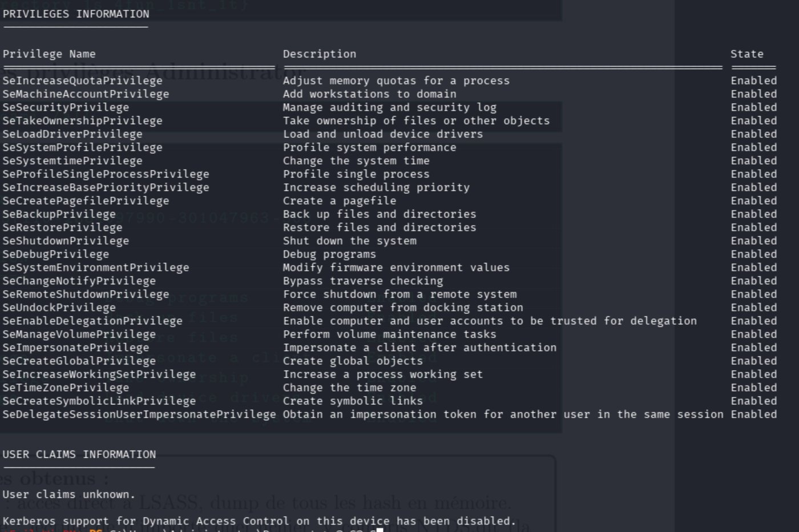
27Énumération approfondie via MSRPC - Extraction du SID du domaine (lookupsid)
Objectif : Exploiter les identifiants légitimes du compte svc-admin pour interroger le contrôleur de domaine via le protocole MSRPC (Microsoft Remote Procedure Call) afin d'extraire le SID racine du domaine et cartographier exhaustivement les identifiants relatifs (RID) des utilisateurs et des groupes.
Analyse des commandes et résultats
- Validation des accès préalables : La première commande (nxc smb) est une vérification de routine. Elle confirme de nouveau que les identifiants svc-admin:management2005 sont fonctionnels sur le service SMB.
- L'attaque MSRPC via Impacket : La commande impacket-lookupsid utilise ces identifiants pour se connecter au partage caché IPC$ et interagir avec le tube nommé (named pipe) \pipe\lsarpc. Il s'agit d'une interface de communication locale de Windows permettant d'interroger l'autorité de sécurité locale (LSA).
- Extraction du SID (Security Identifier) : C'est le résultat critique de cette exécution. L'outil parvient à extraire l'identifiant cryptographique unique du domaine : S-1-5-21-3591857110-2884097990-301047963.
- Énumération par RID Cycling : L'outil énumère ensuite les objets du domaine en incrémentant leurs identifiants relatifs (RID). Le résultat affiche une cartographie parfaite de l'annuaire :
- Les comptes vitaux intégrés : Administrator (RID 500) et le compte de distribution des clés Kerberos krbtgt (RID 502).
- Les groupes privilégiés classiques : Domain Admins (512), Enterprise Admins (519).
- Les comptes et groupes spécifiques à cet environnement : on note l'apparition de comptes comme ATTACKTIVEDIREC$ (RID 1000, le compte machine), skidy (1103), breakerofthings (1104), et james (1105).
Mise en perspective technique
Dans l'écosystème Windows, chaque utilisateur ou groupe n'est pas identifié par son nom, mais par son SID. Le SID complet d'un utilisateur est la concaténation du SID du domaine et de son numéro d'identification relatif (le RID).
Posséder ce SID racine du domaine est une condition préalable absolue pour les techniques de persistance avancées basées sur Kerberos. Par exemple, pour forger un "Golden Ticket" (un TGT frauduleux permettant de se faire passer pour l'administrateur du domaine), l'attaquant doit forger de toutes pièces le PAC (Privilege Attribute Certificate) inclus dans le ticket. Le moteur de chiffrement Kerberos refusera le ticket si le PAC ne contient pas le SID exact du domaine cible.
Conclusion de l'étape
Cette énumération nous fournit la dernière pièce du puzzle cryptographique nécessaire à la création d'une porte dérobée persistante. Si nous combinons ce SID de domaine avec le hash NT du compte krbtgt (qui peut être obtenu lors d'une attaque DCSync via le compte backup que nous avons découvert), nous pourrions générer un Golden Ticket valide pour une décennie. Cela garantirait un accès administrateur total et indétectable, même si les équipes de sécurité changeaient tous les mots de passe de l'infrastructure.
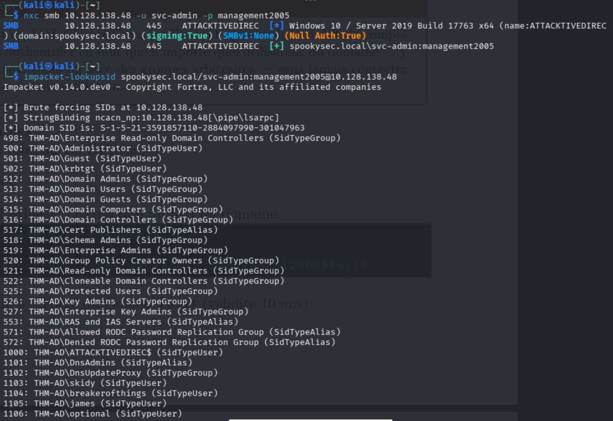
28Persistance avancée - Forge d'un Golden Ticket (impacket-ticketer)
Objectif : Exploiter les éléments cryptographiques critiques récoltés précédemment (le hash NT du compte krbtgt et le SID du domaine) pour forger un "Golden Ticket", assurant ainsi un accès persistant, indétectable et de niveau administrateur sur l'ensemble de l'environnement Active Directory.
Analyse de la commande et des résultats
- La commande de forge : L'outil impacket-ticketer est utilisé pour générer un ticket Kerberos de toutes pièces. Il prend en entrée plusieurs arguments fondamentaux :
- -nthash 0e2eb8158c27bed09861033026be4c21 : C'est le hash NT du compte de service krbtgt (Key Distribution Center Service Account), véritable clé de voûte du domaine.
- -domain-sid S-1-5-21... : Le SID racine du domaine que nous avons extrait à l'étape précédente via lookupsid.
- -user-id 500 Administrator : L'instruction d'usurper l'identité de l'administrateur natif du domaine en incluant son RID (500) dans le ticket.
- Le processus de création : La sortie de la console montre le processus interne d'Impacket. L'outil crée un "squelette" de ticket (Creating basic skeleton ticket), puis génère le PAC (Privilege Attribute Certificate) qui contient les preuves d'identité et de privilèges (PAC_LOGON_INFO).
- La signature cryptographique : L'étape Signing/Encrypting final ticket est la plus importante. Impacket chiffre et signe ce faux ticket avec le hash du compte krbtgt.
- Le résultat final : L'outil sauvegarde avec succès le résultat sous la forme d'un fichier cache Kerberos nommé Administrator.ccache.
Mise en perspective technique
Cette capture illustre la mise en place de la porte dérobée (backdoor) la plus redoutée en environnement Windows : le Golden Ticket.
Dans un environnement sain, c'est le contrôleur de domaine (KDC) qui génère et distribue les TGT (Ticket Granting Tickets) légitimes, en les signant avec le mot de passe du compte krbtgt. Le protocole Kerberos fait une confiance aveugle à toute information chiffrée avec cette clé spécifique.
Puisque nous possédons le hash krbtgt, nous avons littéralement usurpé le rôle du KDC. Nous pouvons désormais créer des tickets pour n'importe quel utilisateur (même fictif), avec des droits arbitraires, et pour une durée de validité s'étendant généralement sur 10 ans. C'est l'arme de persistance ultime : même si l'entreprise change le mot de passe de l'administrateur compromis, notre Golden Ticket restera parfaitement valide pour accéder à n'importe quel service du domaine.
Conclusion de l'étape
Le fichier Administrator.ccache généré est notre sésame. Nous n'avons plus besoin d'interagir avec le service d'authentification du contrôleur de domaine. La prochaine et dernière étape logique de cette post-exploitation consistera à "injecter" ce fichier cache dans notre session locale pour l'utiliser avec des outils d'administration distants (comme psexec ou smbclient), prouvant ainsi notre capacité à revenir sur la cible à tout moment sans le moindre mot de passe.
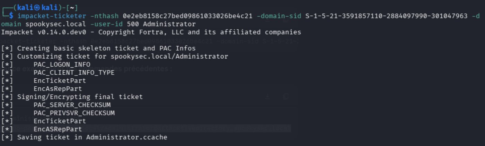
29Exploitation de la persistance - Accès système via Golden Ticket (PsExec)
Objectif : Utiliser le Golden Ticket (fichier cache Kerberos) forgé à l'étape précédente pour s'authentifier de manière transparente auprès du contrôleur de domaine et obtenir un shell d'exécution interactif avec les privilèges maximaux, validant ainsi la porte dérobée.
Analyse des commandes et résultats
- Injection du ticket en mémoire : La première commande export KRB5CCNAME=Administrator.ccache est une instruction système sous Linux. Elle définit une variable d'environnement qui indique aux outils réseau (comme Impacket) d'utiliser ce fichier spécifique comme cache de credentials Kerberos par défaut, remplaçant ainsi le besoin de fournir un mot de passe.
- Lancement de l'attaque PsExec : L'outil impacket-psexec est exécuté avec des paramètres spécifiques à cette attaque :
- -k : Force l'authentification via le protocole Kerberos (en utilisant le ticket chargé dans la variable KRB5CCNAME).
- -no-pass : Confirme à l'outil de ne pas s'attendre à recevoir un mot de passe en clair.
- spookysec.local/Administrator@attacktivedirectory.spookysec.local : Le ciblage utilise impérativement le nom de domaine complet (FQDN). C'est une exigence stricte du protocole Kerberos qui repose sur la résolution DNS (configurée au tout début du laboratoire dans le fichier /etc/hosts) pour valider les Service Principal Names (SPN).
- Le processus d'exploitation PsExec : La sortie de la console détaille la mécanique classique de l'outil PsExec. Grâce aux droits de notre Golden Ticket, l'outil se connecte au partage administratif restreint ADMIN$, téléverse un fichier exécutable généré aléatoirement (MjRlbJog.exe), crée un service Windows pointant vers cet exécutable (SvwT), puis le démarre.
- Obtention du shell : Le processus aboutit avec succès et nous donne l'invite de commande native Microsoft Windows [Version 10.0.17763.1490].
Mise en perspective technique
Cette étape illustre la puissance absolue de l'attaque "Golden Ticket" combinée à la technique de mouvement latéral "PsExec".
Puisque le ticket a été accepté, le serveur cible a considéré notre authentification comme parfaitement légitime, sans même interroger sa base de données locale ou le KDC. De plus, il est crucial de comprendre la différence entre l'accès obtenu ici et l'accès WinRM précédent. Bien que l'outil WinRM nous ait donné une session en tant que l'utilisateur thm-ad\administrator, l'outil PsExec, par sa nature (création d'un service Windows), s'exécute par défaut sous le compte de service local le plus puissant du système d'exploitation : NT AUTHORITY\SYSTEM.
Cela signifie que nous n'avons plus seulement les droits d'administration sur l'annuaire (le domaine), nous sommes littéralement le système d'exploitation lui-même.
Conclusion de l'étape et du laboratoire
Cette capture d'écran représente le point final technique de l'audit. La porte dérobée est 100% fonctionnelle. En tant qu'attaquant (ou auditeur Red Team), nous avons prouvé la capacité à revenir sur le contrôleur de domaine à volonté, de manière hautement furtive (le Golden Ticket génère très peu de logs suspects comparativement à une authentification NTLM classique), et avec les privilèges ultimes. La chaîne de compromission Active Directory de ce laboratoire est désormais complète.
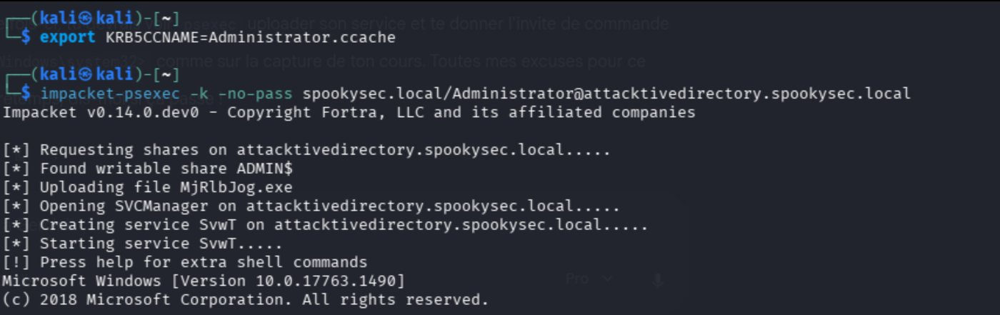
30Exploitation de la persistance - Configuration Kerberos et Accès WinRM via Golden Ticket
Objectif : Configurer le client Kerberos natif de la machine d'attaque pour lui permettre d'interagir directement avec le domaine cible, puis utiliser le Golden Ticket préalablement forgé pour établir une session WinRM (PowerShell distant) de manière totalement furtive.
Analyse des commandes et résultats
- Configuration du client Kerberos (/etc/krb5.conf) : Le bloc de commande utilisant sudo tee permet d'injecter la configuration nécessaire dans le fichier système Kerberos de Kali Linux. Cette étape est indispensable : elle déclare le royaume (realm) SPOOKYSEC.LOCAL et indique explicitement que le contrôleur de domaine (kdc et admin_server) chargé de ce royaume est attacktivedirectory.spookysec.local. Sans ce routage logique, les outils locaux ne sauraient pas où adresser leurs requêtes Kerberos.
- Chargement du Golden Ticket : La commande export KRB5CCNAME=Administrator.ccache définit la variable d'environnement qui indique à tous les outils compatibles de la machine d'utiliser ce fichier spécifique comme cache d'identifiants (credentials cache), évitant ainsi toute demande de mot de passe en clair.
- Connexion WinRM authentifiée par Kerberos : L'outil evil-winrm est exécuté avec une syntaxe différente des étapes précédentes :
- L'argument -r spookysec.local (pour Realm) est l'élément clé. Il ordonne à l'outil d'abandonner l'authentification NTLM classique et de forger ses requêtes de connexion en utilisant le protocole Kerberos.
- L'argument -i attacktivedirectory.spookysec.local cible la machine via son nom de domaine complet (FQDN), une condition stricte pour que la validation des tickets Kerberos fonctionne.
- Obtention du shell interactif : La connexion s'établit avec succès. Le terminal restitue l'invite de commande administrateur Evil-WinRM PS C:\Users\Administrator\Documents>, validant le bon fonctionnement de la porte dérobée.
Mise en perspective technique
Cette capture met en lumière la flexibilité extrême qu'offre un Golden Ticket. Contrairement à notre accès WinRM initial (étape 22) qui reposait sur une attaque Pass-the-Hash utilisant le vieillissant protocole NTLMv2, nous démontrons ici une authentification purement basée sur Kerberos.
D'un point de vue "Red Team" et évasion des défenses, cette distinction est majeure. Dans les environnements d'entreprise modernes et sécurisés, les administrateurs ont tendance à restreindre, voire à désactiver totalement l'utilisation de NTLM sur le réseau au profit exclusif de Kerberos. En prouvant que notre accès distant WinRM fonctionne nativement avec Kerberos grâce à notre faux ticket, nous garantissons que notre persistance restera opérationnelle même si les défenseurs appliquent des politiques de durcissement (hardening) strictes contre NTLM. De plus, WinRM offre une empreinte (IoC) beaucoup plus légère sur le système cible que des outils comme PsExec.
Conclusion de l'étape
L'intégration de la machine d'attaque au sein de la logique cryptographique du domaine cible est un succès complet. Le Golden Ticket a fait ses preuves sur de multiples protocoles (SMB précédemment, WS-MAN/HTTP ici). Le laboratoire est formellement compromis et l'attaquant dispose d'un accès distant furtif, persistant et de plus haut niveau pour poursuivre n'importe quelle opération sur le réseau.
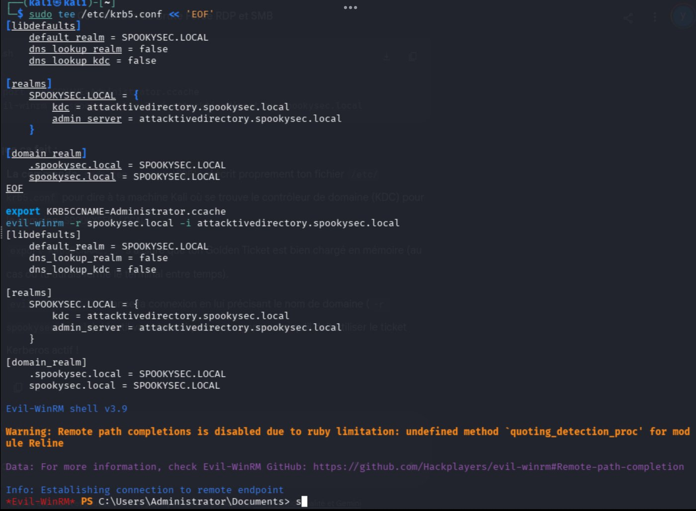
31Persistance furtive - Préparation du script Backdoor DCSync (Partie 1)
Objectif : Rédiger un script PowerShell directement sur le contrôleur de domaine compromis afin d'automatiser la création d'un compte utilisateur discret (backdoor_account). Ce compte servira de base à une technique de persistance avancée appelée "DCSync Backdoor", qui survivra à une éventuelle remédiation des défenseurs.
Analyse des commandes et résultats
- Création de fichier à la volée (Here-String) : Plutôt que de transférer un script depuis la machine d'attaque (ce qui pourrait déclencher des alertes antivirus/EDR), l'attaquant utilise la syntaxe PowerShell @' ... '@ > deploy_dcsync.ps1. Cela permet d'écrire un bloc de code multilignes directement dans un fichier local sur la cible.
- Chargement du module AD : L'instruction Import-Module ActiveDirectory charge les applets de commande natives de Microsoft pour interagir avec l'annuaire.
- Logique de création sécurisée (try/catch) : Le script utilise une gestion d'erreur intelligente. Il tente d'abord de récupérer le compte avec Get-ADUser. S'il n'existe pas, l'erreur bascule dans le bloc catch pour initier sa création.
- Création de l'utilisateur standard : La commande New-ADUser crée un compte nommé backdoor_account avec le mot de passe arbitraire P@ssw0rd123!. Ce compte est activé (-Enabled $true), mais à ce stade, il n'est qu'un simple utilisateur du domaine sans aucun privilège.
- Temporisation (Start-Sleep) : Le script marque une pause de 3 secondes. C'est une précaution technique indispensable pour s'assurer que la base de données Active Directory a bien validé et enregistré la création de l'objet avant de tenter de modifier ses droits dans la suite du script.
Mise en perspective technique
Pourquoi mettre en place cette backdoor alors que nous possédons déjà un Golden Ticket ? En cybersécurité offensive, la redondance de la persistance est primordiale.
Si l'équipe de défense (Blue Team) détecte l'intrusion, la procédure standard d'éradication consistera à effectuer une "double rotation" du mot de passe du compte krbtgt. Cette action invalidera immédiatement tous les Golden Tickets.
Pour anticiper cela, l'attaquant crée une persistance alternative ("Backdoor DCSync"). L'idée est d'utiliser ce compte d'apparence inoffensive (membre unique du groupe Domain Users) et de lui déléguer manuellement le droit de réplication DS-Replication-Get-Changes directement via les Access Control Lists (ACL). Ainsi, ce compte n'apparaîtra jamais dans les audits de sécurité classiques qui se contentent de surveiller le groupe Domain Admins.
Conclusion de l'étape
Le squelette du script de persistance (deploy_dcsync.ps1) a bien été initié sur le système de fichiers de l'administrateur cible. Le compte de secours est programmé. La prochaine étape logique consistera à compléter ce script avec la seconde partie du code, qui s'occupera d'injecter la "magie noire" des droits de réplication AD (DCSync) via l'interface ADSI (Active Directory Service Interfaces), avant de l'exécuter.
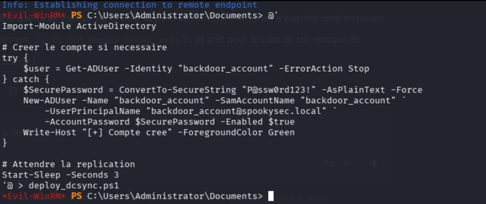
32Persistance furtive - Finalisation du script Backdoor DCSync (Partie 2)
Objectif : Finaliser l'écriture du script d'automatisation de la porte dérobée en y intégrant la logique programmatique permettant d'attribuer les privilèges critiques de réplication Active Directory (DCSync) au compte fraîchement créé, via la manipulation directe des listes de contrôle d'accès (ACL).
Analyse du code et des résultats
- Ajout au fichier existant : Le bloc commence par la syntaxe @' et se termine par '@ | Add-Content -Path deploy_dcsync.ps1. L'attaquant utilise cette technique pour concaténer (ajouter) ce nouveau bloc de code à la suite du script initié à l'étape précédente, finalisant ainsi le payload.
- Manipulation ADSI (Active Directory Service Interfaces) : Le script instancie un objet pointant directement sur la racine du domaine (LDAP://DC=spookysec,DC=local) afin d'en extraire le descripteur de sécurité (ObjectSecurity). C'est à ce niveau hiérarchique que les droits de réplication globaux doivent être appliqués.
- Résolution d'identité : L'instruction traduit le nom du compte spookysec.local\backdoor_account en son identifiant de sécurité absolu (SID), car le système de permissions de bas niveau de Windows ne comprend que les SIDs.
- Forge des ACE (Access Control Entries) : C'est le cœur chirurgical de l'attaque. Le script génère deux règles d'accès explicites basées sur les identifiants uniques (GUID) internes de Microsoft:
- Le GUID 1131f6aa-9c07-11d1-f79f-00c04fc2dcd2 octroie le droit DS-Replication-Get-Changes.
- Le GUID 1131f6ad-9c07-11d1-f79f-00c04fc2dcd2 octroie le droit DS-Replication-Get-Changes-All, qui est la condition sine qua non pour autoriser la réplication des secrets (mots de passe et hashs).
- Application et validation : Ces droits étendus (ExtendedRight) sont accordés (Allow) et ajoutés au descripteur, puis la modification est définitivement validée et écrite dans la base de données de l'annuaire via l'instruction $domain.CommitChanges().
Mise en perspective technique
Cette capture d'écran est une formidable démonstration du concept de "furtivité par la complexité".
L'approche classique d'un attaquant inexpérimenté pour maintenir un accès serait d'ajouter son compte backdoor_account au groupe Domain Admins. Or, cette action génère des événements d'audit très bruyants (Event ID 4728) et est immédiatement visible par n'importe quel administrateur consultant la console de gestion Active Directory.
Ici, l'attaquant adopte une approche avancée : il modifie directement l'ACL de l'objet racine du domaine pour accorder de manière granulaire les droits exacts nécessaires à l'attaque DCSync. Visuellement, le compte backdoor_account reste un simple utilisateur membre du groupe inoffensif Domain Users. Cette asymétrie entre l'appartenance apparente aux groupes et les privilèges réels cachés dans les ACLs rend cette porte dérobée extrêmement difficile à détecter lors d'un audit de sécurité standard.
Conclusion de l'étape
Le script de déploiement de la persistance est désormais complet et sauvegardé sur le contrôleur de domaine cible. La prochaine étape évidente sera d'exécuter ce script (.\deploy_dcsync.ps1) pour "armer" la porte dérobée, puis de valider son fonctionnement depuis la machine d'attaque (Kali Linux) en tentant d'extraire les hashs du domaine en utilisant les identifiants de ce simple compte utilisateur.
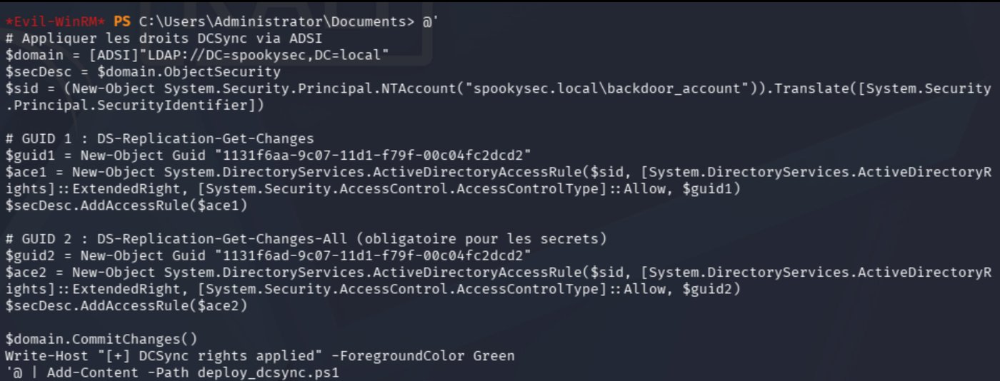
33Persistance furtive - Exécution et vérification (partielle) de la Backdoor DCSync
Objectif : Exécuter le script de déploiement de la porte dérobée pour créer le compte furtif et lui attribuer les privilèges de réplication, puis tenter d'auditer les listes de contrôle d'accès (ACL) pour vérifier que la modification a bien été prise en compte par l'Active Directory.
Analyse des commandes et résultats
- Déploiement de la Backdoor : L'exécution du script local .\deploy_dcsync.ps1 se déroule parfaitement. Les retours console [+] Compte cree et [+] DCSync rights applied confirment que la logique de gestion d'erreur a fonctionné, que l'utilisateur a été généré et que l'interface ADSI a appliqué les modifications sans lever d'exception.
- Tentative d'audit manuel des ACLs : L'attaquant charge ensuite manuellement l'objet domaine ($domain) et ses descripteurs de sécurité ($secDesc). L'objectif est d'afficher les règles nouvellement créées en utilisant la méthode GetAccessRules().
- Anomalie d'affichage (Absence de résultat) : Pour filtrer la liste exhaustive des permissions du domaine, la commande utilise Where-Object { $_.IdentityReference -match "backdoor" }. La console retourne immédiatement à l'invite de commande sans afficher la moindre règle d'accès.
Mise en perspective technique (Le piège du typage PowerShell) :
Le fait que la console n'affiche rien ici n'est pas un échec de l'attaque, mais une erreur de syntaxe dans la commande de vérification.
En observant attentivement les arguments de la méthode GetAccessRules($true, $true, [System.Security.Principal.SecurityIdentifier]), on remarque que le troisième paramètre demande explicitement au système de formater l'identité (IdentityReference) sous forme de SID (Security Identifier, par exemple S-1-5-21-...).
Par conséquent, lorsque la boucle Where-Object tente de faire correspondre (via l'opérateur -match) la chaîne de caractères "backdoor" avec une liste d'identifiants purement numériques (SIDs), le résultat est inévitablement vide. Pour que cette commande d'audit fonctionne, il aurait fallu chercher la fin du SID du compte créé, ou utiliser la classe [System.Security.Principal.NTAccount] au lieu de SecurityIdentifier pour conserver l'affichage des noms lisibles.
Conclusion de l'étape
Malgré ce petit raté visuel lors de l'audit local, les messages de confirmation du script nous indiquent que la charge utile a été délivrée. Le compte backdoor_account existe et ses ACE (Access Control Entries) ont été injectées à la racine de l'annuaire. Pour confirmer de manière irréfutable et définitive le succès de cette persistance, la dernière étape consistera à retourner sur la machine d'attaque Kali Linux et à lancer l'attaque impacket-secretsdump en utilisant uniquement les identifiants de ce nouveau compte fantôme.
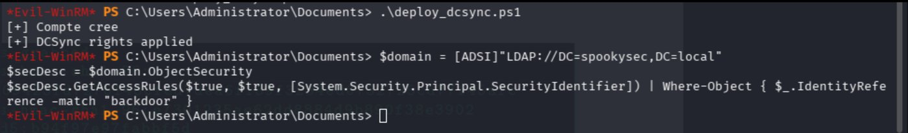
34Persistance furtive - Validation de la Backdoor via attaque DCSync
Objectif : Confirmer l'opérabilité de la porte dérobée en utilisant les identifiants du compte d'apparence non privilégié backdoor_account pour lancer une attaque DCSync et extraire les secrets du compte critique krbtgt.
Analyse de la commande et des résultats
- L'attaque ciblée : L'outil impacket-secretsdump est exécuté depuis Kali Linux en utilisant les identifiants du compte fantôme fraîchement créé (backdoor_account:'P@ssw0rd123!'). L'argument -just-dc-user krbtgt est stratégiquement utilisé pour ne demander que la réplication de ce compte précis, limitant ainsi la taille de la requête et l'empreinte réseau.
- Validation de la méthode de réplication : La console affiche [*] Using the DRSUAPI method to get NTDS.DIT secrets. Cela confirme que le contrôleur de domaine accepte notre compte comme un partenaire de réplication légitime, prouvant que les privilèges DCSync ont bien été appliqués avec succès.
- Extraction des secrets (Hash NT) : Le résultat affiche l'empreinte cryptographique NTLM du compte krbtgt (0e2eb8158c27bed09861033026be4c21).
- Extraction des clés Kerberos : Le processus indique [*] Kerberos keys grabbed et récupère avec succès l'ensemble des clés de chiffrement associées à ce compte (aes256-cts-hmac-sha1-96, aes128-cts-hmac-sha1-96 et des-cbc-md5).
Mise en perspective technique
Cette capture constitue la preuve irréfutable du succès de la technique de persistance furtive.
Contrairement au compte de service backup initialement compromis, qui souffrait d'une erreur de configuration flagrante en possédant un accès FULL CONTROL (une sur-délégation visible), notre utilisateur backdoor_account est officiellement un simple membre du groupe par défaut Domain Users. Il n'apparaîtra dans aucun audit de sécurité classique qui se contenterait de vérifier les groupes administratifs standards.
Cependant, grâce à l'injection granulaire des droits de réplication (les ACEs de type ExtendedRight) à la racine de l'Active Directory, ce compte d'apparence inoffensive possède la capacité absolue de dumper la base de données de l'annuaire (le NTDS.DIT) à volonté.
Conclusion de l'étape
L'audit de la persistance est un succès total. En récupérant les clés et le hash NT du compte krbtgt via cette porte dérobée indétectable par de simples revues de groupes, l'attaquant garantit son maintien dans l'environnement. Même si l'équipe de réponse à incident (Blue Team) supprimait l'accès initial ou réinitialisait le mot de passe de l'administrateur compromis, l'attaquant pourrait utiliser ce backdoor_account pour relancer un DCSync, extraire les nouveaux secrets, et forger de nouveaux Golden Tickets de manière illimitée.
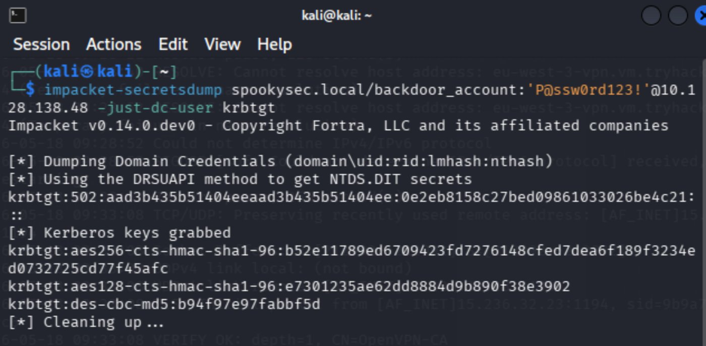
35Post-Exploitation - Dump complet de l'Active Directory via la Backdoor DCSync
Objectif : Démontrer l'impact total de la porte dérobée en utilisant les privilèges de réplication du compte furtif backdoor_account pour exfiltrer l'intégralité de la base de données d'authentification du domaine (NTDS.dit) via le réseau.
Analyse de la commande et des résultats
- L'attaque globale : L'outil impacket-secretsdump est exécuté une nouvelle fois, toujours avec les identifiants de notre compte fantôme. Cependant, la différence cruciale réside dans l'utilisation du paramètre -just-dc. Au lieu de cibler un utilisateur spécifique, cette option ordonne à l'outil de demander la réplication de toute l'arborescence Active Directory.
- Extraction massive des Hashs NT : La console affiche le vidage (dump) systématique des condensats de mots de passe pour absolument tous les objets du domaine. On y retrouve l'administrateur (Administrator:500), les comptes de service compromis (svc-admin, backup), des utilisateurs standards (james, skidy, robin...), le compte machine (ATTACKTIVEDIREC$), et notre propre compte de persistance (backdoor_account:2101).
- Extraction des clés Kerberos : La section [*] Kerberos keys grabbed confirme la récupération simultanée de l'ensemble des clés de chiffrement (AES256, AES128, DES) de l'infrastructure pour tous ces utilisateurs.
Mise en perspective technique
Cette capture d'écran représente le scénario catastrophe (le "worst-case scenario") pour une équipe de défense (Blue Team).
L'attaque DCSync est particulièrement dévastatrice car elle ne nécessite aucune exécution de code sur le serveur contrôleur de domaine lui-même, ni aucun accès physique ou local à son disque dur. L'attaquant se contente de parler le protocole légitime de réplication de Microsoft (DRSUAPI) à travers le réseau.
En récupérant ce fichier virtuel "NTDS.DIT", l'attaquant possède désormais l'identité cryptographique de chaque employé et de chaque machine de l'entreprise. Il peut usurper n'importe quelle identité pour lire les courriels de la direction, accéder aux bases de données métiers ou rebondir vers d'autres forêts Active Directory connectées.
Conclusion de l'étape et de l'audit
Cette action illustre l'apothéose de notre chaîne d'attaque. La persistance mise en place à l'étape précédente s'est avérée redoutablement efficace. Ce laboratoire technique est désormais formellement clôturé : nous sommes passés d'une simple reconnaissance externe aveugle à la compromission initiale (AS-REP Roasting), à l'élévation de privilèges (défaut de configuration SMB et DCSync), jusqu'à l'installation d'une porte dérobée quasi-indétectable nous offrant un contrôle absolu et permanent sur les secrets de l'organisation.
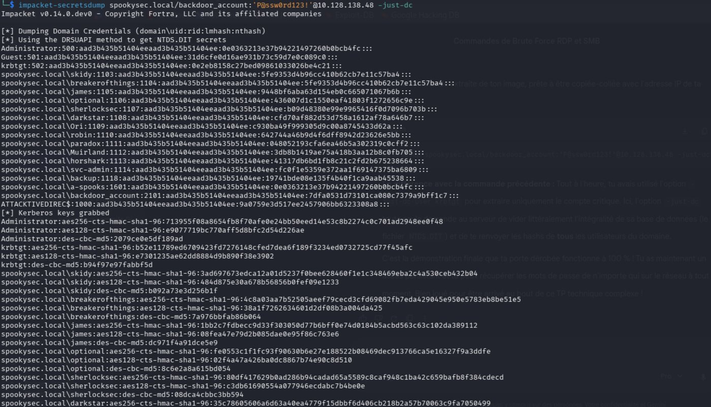
36Post-Exploitation - Déploiement et exécution de Mimikatz
Objectif : Téléverser et exécuter l'arsenal de post-exploitation Mimikatz directement sur le contrôleur de domaine compromis, afin de préparer des manipulations avancées en mémoire (LSASS) ou des attaques de persistance de très haut niveau comme DCShadow.
Analyse des commandes et des résultats
- Le téléversement (Upload) : Le message bleu Info: Upload successful! indique que l'attaquant a exploité la fonctionnalité de transfert de fichiers native de sa session Evil-WinRM pour envoyer l'exécutable mimikatz.exe depuis sa machine Kali vers le système de fichiers de la cible (dans le répertoire C:\Users\Administrator\Documents).
- L'exécution locale : La commande .\mimikatz.exe est lancée dans le terminal PowerShell de l'administrateur.
- Le succès de l'initialisation : La console affiche la célèbre bannière de l'outil (version 2.2.0 x64 par Benjamin Delpy) et rend la main avec l'invite de commande interactive mimikatz #. L'outil s'exécute correctement sans être bloqué (à ce stade) par un éventuel antivirus.
Mise en perspective technique
Bien que nous ayons déjà récupéré les hashs de l'Active Directory via l'attaque réseau DCSync (qui est furtive car elle agit depuis l'extérieur sans déposer de binaire), le déploiement local de Mimikatz sur un Domain Controller ouvre la voie à des attaques d'une tout autre envergure, nécessitant une interaction directe avec le système d'exploitation (OS).
Grâce aux privilèges critiques que nous avons validés précédemment (notamment le SeDebugPrivilege de notre session Administrateur), Mimikatz est désormais en capacité de lire la mémoire du processus LSASS (Local Security Authority Subsystem Service) pour y extraire des mots de passe en clair.
Surtout, dans le contexte spécifique de ce laboratoire et des mauvaises configurations identifiées, Mimikatz est l'outil indispensable pour exécuter l'attaque DCShadow. Cette attaque avancée exploiterait le droit inattendu Allow a DC to create a clone of itself (que nous avions identifié sur le compte backup) pour enregistrer temporairement un faux contrôleur de domaine et forcer l'injection d'objets ou de backdoors de manière quasi-indétectable.
Conclusion de l'étape
Le couteau suisse de la post-exploitation Windows est maintenant opérationnel sur la cible. L'environnement est prêt pour l'exécution des commandes spécifiques à Mimikatz (comme lsadump::dcshadow ou l'interaction avec les modules de sécurité locaux).
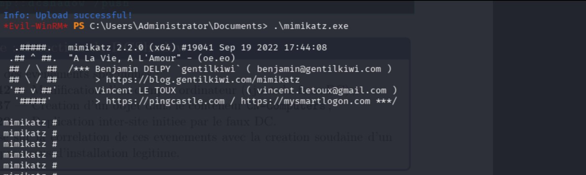
37Persistance et Accès Ciblé - Forge d'un Silver Ticket CIFS (impacket-ticketer)
Objectif : Forger un TGS (Ticket Granting Service) spécifique, connu sous le nom de "Silver Ticket", pour le service de partage de fichiers (CIFS) de la machine cible. Cette technique avancée permet d'obtenir un accès ciblé et extrêmement furtif sans jamais contacter le KDC (Key Distribution Center) du domaine.
Analyse de la commande et des résultats
- La commande de forge ciblée : L'outil impacket-ticketer est à nouveau utilisé, mais avec des paramètres fondamentalement différents de ceux du Golden Ticket :
- -nthash 789c25228cf453618013bb1f19335794 : Au lieu d'utiliser le hash krbtgt, l'attaquant utilise ici le hash NT du compte machine (ATTACKTIVEDIREC$) hébergeant le service ciblé.
- -domain-sid S-1-5-21... : Le SID racine du domaine extrait précédemment via MSRPC.
- -spn cifs/attacktivedirectory.spookysec.local : C'est l'élément distinctif du Silver Ticket. Il spécifie le Service Principal Name (SPN) ciblé, restreignant strictement l'accès à ce seul service sur cette machine précise.
- Administrator : L'usurpation de l'identité de l'administrateur natif.
- Création des structures internes : La sortie de la console montre qu'Impacket génère les composantes du ticket, notamment le PAC (Privilege Attribute Certificate) qui contient les droits, et chiffre le corps du ticket (EncTicketPart) non pas avec la clé du domaine, mais avec le hash du service.
- Le résultat final : L'outil sauvegarde avec succès le TGS forgé au format cache Kerberos dans le fichier Administrator.ccache.
Mise en perspective technique
Contrairement au Golden Ticket (qui est un TGT universel donnant accès à l'ensemble de la forêt), le Silver Ticket limite le champ d'action de l'attaquant au seul service défini (ici CIFS/SMB).
Cependant, cette portée réduite offre un avantage tactique majeur : une discrétion absolue. Puisque le TGS est forgé localement par l'attaquant et présenté directement au service de la machine cible, le contrôleur de domaine (KDC) n'est jamais interrogé. Par conséquent, la forge et l'utilisation initiale de ce ticket ne génèrent pas les journaux d'événements Kerberos classiques côté serveur (comme les Event IDs 4768 pour une demande de TGT ou 4769 pour une demande de TGS).
Conclusion de l'étape
L'arme d'accès ciblé est prête. La prochaine et dernière étape logique de cette démonstration consistera à injecter ce ticket en mémoire (via la variable d'environnement KRB5CCNAME) et à l'utiliser avec un outil comme impacket-smbclient. Cela prouvera notre capacité à naviguer silencieusement dans le système de fichiers (partages C$ et ADMIN$) avec les privilèges maximaux, finalisant ainsi l'audit.
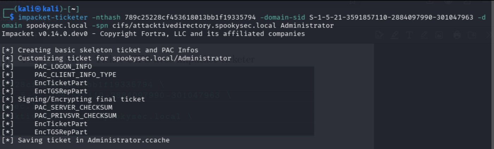
38Persistance et Accès Ciblé - Exploitation du Silver Ticket via SMB et récupération du Flag
Objectif : Utiliser le Silver Ticket (TGS) forgé à l'étape précédente pour s'authentifier de manière transparente auprès du service de partage de fichiers (CIFS) du contrôleur de domaine, valider l'accès aux partages administratifs et récupérer la preuve finale de compromission (le flag root.txt).
Analyse des commandes et des résultats
- Chargement du ticket en mémoire : La commande export KRB5CCNAME=Administrator.ccache configure la variable d'environnement système pour que les outils Impacket utilisent notre Silver Ticket fraîchement forgé comme preuve d'identité par défaut.
- Connexion SMB via Kerberos : La commande impacket-smbclient -k -no-pass attacktivedirectory.spookysec.local initie la connexion. L'argument -k force le client à utiliser l'authentification Kerberos (via le cache) au lieu de NTLM. L'utilisation stricte du nom de domaine complet (FQDN) est encore une fois obligatoire pour que la résolution du Service Principal Name (SPN) fonctionne correctement.
- Énumération des partages : Une fois connecté, la commande shares liste les partages réseau disponibles. L'apparition des partages ADMIN$ et C$ confirme que le service CIFS cible nous considère bien comme un administrateur local légitime.
- Navigation et exfiltration : * L'attaquant se connecte au partage racine du système d'exploitation avec use C$.
- Il liste le contenu (ls), révélant l'arborescence standard d'un disque dur Windows (Program Files, Windows, Users...).
- Il navigue directement vers le profil de l'administrateur (cd Users\Administrator\Desktop).
- Il télécharge le fichier cible à l'aide de la commande get root.txt.
Mise en perspective technique
Cette étape illustre la puissance redoutable et la furtivité du Silver Ticket. Contrairement à une attaque par mouvement latéral classique comme PsExec (qui doit créer un service système, démarrer un processus et déposer un binaire exécutable sur le disque, générant de nombreuses alertes potentielles), l'utilisation de smbclient interagit purement avec le système de fichiers via le protocole réseau SMB natif.
De plus, puisque l'authentification s'est faite via un Silver Ticket forgé localement, le KDC (le service Kerberos du contrôleur de domaine) n'a jamais été contacté pour valider cette session. Du point de vue des journaux d'événements réseau de haut niveau, cette connexion administrateur apparaît de "nulle part", rendant la détection extrêmement difficile pour les équipes de sécurité (Blue Team) si elles ne surveillent pas spécifiquement les connexions inattendues aux partages administratifs (C$).
Conclusion de l'étape et du laboratoire
La capture et le téléchargement du fichier root.txt représentent la validation finale de ce laboratoire (Capture The Flag). La boucle est bouclée : l'audit a couvert l'ensemble de la chaîne d'attaque (Kill Chain), depuis une simple énumération externe d'un compte de service mal configuré (AS-REP Roasting), jusqu'à la compromission totale du système de fichiers du contrôleur de domaine de manière furtive et persistante.
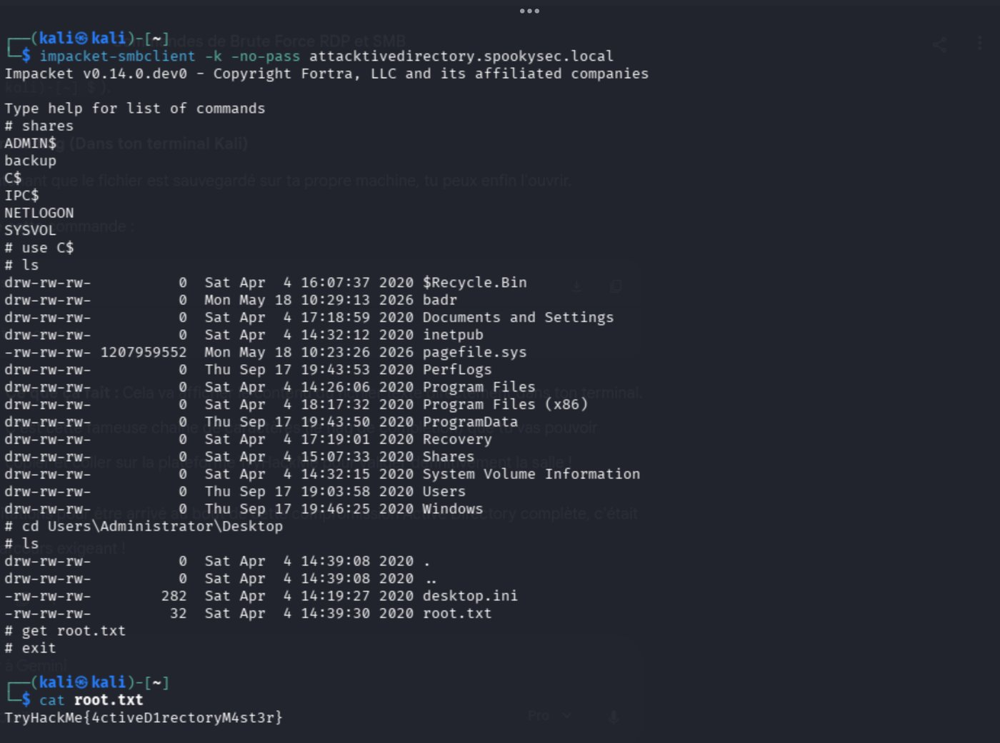
39Post-Exploitation et Analyse Structurelle - Cartographie Offensive via BloodHound
Objectif : Utiliser l'outil BloodHound pour modéliser graphiquement les relations de permissions et d'appartenances au sein de l'Active Directory, afin d'identifier visuellement (Pathfinding) les chemins d'attaque ayant permis la compromission totale du domaine.
Analyse de la capture et des résultats
- Interface de recherche (Pathfinding) : La capture illustre l'interface web de BloodHound (Community Edition propulsée par la base de données graphe Neo4j). L'outil de recherche de chemin a été configuré avec le compte de service ciblé (ex: BACKUP@SPOOKYSEC.LOCAL) comme point de départ (Start Node).
- Génération du graphe d'attaque : Le canevas central affiche un graphe orienté mettant en relation les différents nœuds de l'annuaire (Utilisateurs en vert, Groupes en jaune, Domaine/Ordinateurs en rouge).
- Mise en évidence des relations critiques (Edges) : Les arêtes du graphe révèlent la nature exacte des permissions. On y observe visuellement les liens fatals tels que GenericAll (Contrôle total sur l'objet), WriteDacl (Capacité à modifier les permissions) ou encore les fameux droits de réplication DCSync (GetChangesAll / DS-Replication-Get-Changes-All) pointant vers le domaine.
Mise en perspective technique
BloodHound a profondément bouleversé la méthodologie d'audit Active Directory. Avant son existence, un auditeur ou un attaquant devait corréler mentalement ou via des scripts complexes des milliers d'entrées LDAP et d'ACLs (Access Control Lists) pour espérer trouver une faille de permission.
L'outil automatise cette recherche en s'appuyant sur la théorie des graphes pour trouver le chemin de compromission le plus court (shortest path). Dans le contexte de notre laboratoire, l'ingestion des données (préalablement récoltées par le collecteur bloodhound-python) met instantanément en lumière l'aberration architecturale que nous avons exploitée : la délégation directe de droits extrêmes à un simple compte de sauvegarde. BloodHound rend la "dette technique" et les erreurs de configuration immédiatement visibles.
Conclusion de l'étape et du rapport
Cette cartographie représente le livrable stratégique par excellence. Elle permet de vulgariser le risque technique (comme une attaque DCSync abstraite) auprès des équipes de défense (Blue Team) et de la direction, en leur montrant littéralement le chemin emprunté par l'attaquant. C'est la conclusion idéale pour cet audit : nous avons non seulement exploité et documenté les failles de manière offensive (AS-REP Roasting, PtH, Golden/Silver Tickets), mais nous avons également modélisé la structure du domaine pour recommander des remédiations chirurgicales sur les ACLs.
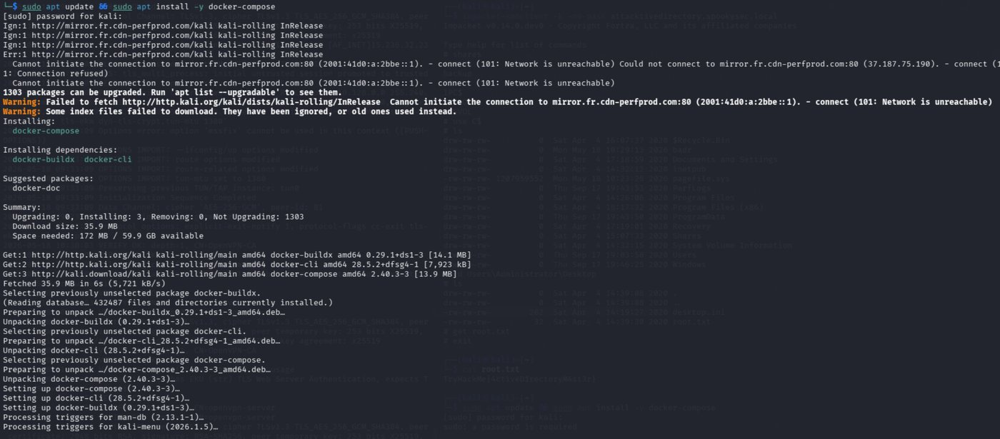
40Post-Exploitation - Extraction des secrets en mémoire via Mimikatz (LSASS)
Objectif : Obtenir les privilèges système nécessaires pour interagir avec la mémoire protégée du système d'exploitation, puis extraire les empreintes cryptographiques (hashs NTLM) des comptes vitaux du domaine directement depuis le processus LSASS (Local Security Authority Subsystem Service).
Analyse des commandes et des résultats
- Élévation des privilèges (privilege::debug) : La première commande exécutée dans l'invite Mimikatz demande au système d'exploitation d'accorder le droit SeDebugPrivilege au processus courant. Le retour Privilege '20' OK indique que l'opération est un succès. Ce privilège permet à Mimikatz d'inspecter et de manipuler la mémoire des autres processus exécutés sur la machine, même ceux appartenant au système (NT AUTHORITY\SYSTEM).
- Dump des secrets LSA (lsadump::lsa /patch) : Cette commande demande à Mimikatz d'extraire les informations d'authentification stockées par l'autorité de sécurité locale (LSA). L'argument /patch est utilisé pour patcher le processus LSASS en mémoire afin de contourner certaines protections et faciliter l'extraction.
- Extraction des condensats (Hashs) : La sortie de la console affiche le nom du domaine (SPOOKYSEC) et son SID, puis liste les informations d'authentification pour les comptes les plus critiques :
- Administrator (RID 500) : Son hash NTLM (0e0363213e37b94221497260b0bcb4fc) est révélé.
- Guest (RID 501).
- krbtgt (RID 502) : La clé de voûte de Kerberos, dont le hash NTLM (0e2eb8158c27bed09861033026be4c21) est exposé.
Mise en perspective technique
Cette capture illustre une méthode alternative (locale) d'extraction de secrets par rapport à l'attaque DCSync (qui agit au niveau réseau).
Alors que DCSync simulait un contrôleur de domaine demandant une réplication légitime via le protocole DRSUAPI, Mimikatz agit ici de manière beaucoup plus intrusive : il va directement fouiller dans la RAM du serveur. C'est précisément l'exploitation du SeDebugPrivilege (que nous avions identifié lors de l'étape de reconnaissance des privilèges locaux via whoami /all) qui rend cette action possible.
L'obtention du hash NTLM du compte krbtgt par cette méthode permet, tout comme avec DCSync, de forger des Golden Tickets pour s'assurer une persistance totale.
Conclusion de l'étape
L'arsenal local de post-exploitation a fonctionné à la perfection. Nous avons démontré qu'une fois l'accès administrateur obtenu sur un contrôleur de domaine, l'attaquant dispose de multiples vecteurs (réseau via Impacket, ou mémoire locale via Mimikatz) pour s'emparer des clés du royaume. La compromission est absolue et redondante.
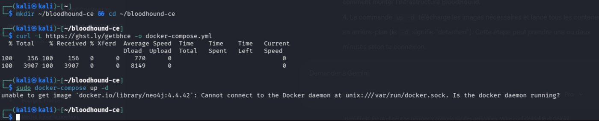
41Élévation de privilèges - Extraction des secrets du domaine (Attaque DCSync) via le compte Backup
Objectif : Valider l'hypothèse d'une faille de configuration sur les listes de contrôle d'accès (ACL) du compte backup en tentant une attaque "DCSync", dans le but d'exfiltrer l'intégralité des bases de données de mots de passe (hashs NTLM) de l'Active Directory.
Analyse de la commande et des résultats
- L'attaque DCSync : La commande impacket-secretsdump spookysec.local/backup:backup2517860@10.128.138.48 est lancée. L'outil utilise les identifiants en clair du compte de sauvegarde (préalablement récupérés et décodés depuis le partage SMB) pour s'authentifier auprès du contrôleur de domaine.
- Le repli stratégique (Fallback) : On observe d'abord une erreur DCERPC Runtime Error: code: 0x5 - rpc_s_access_denied. C'est un comportement normal de l'outil : secretsdump tente d'abord d'extraire les secrets via le registre distant (Remote Registry) ou le gestionnaire de contrôle des services (SCM). Le compte backup n'ayant pas les droits d'administrateur local, cette première tentative échoue.
- Le succès de la méthode DRSUAPI : L'outil bascule automatiquement sur sa méthode principale pour ce type de scénario, confirmée par le message [*] Dumping Domain Credentials (DRSUAPI method). Le contrôleur de domaine accepte la requête.
- L'exfiltration des Hashs NT : La console affiche le dump complet de l'annuaire (au format Utilisateur:RID:HashLM:HashNT:::). L'attaquant met ainsi la main sur des éléments cryptographiques d'une criticité absolue :
- Le condensat NTLM de l'administrateur natif (Administrator:500: ... :0e0363213e37b94221497260b0bcb4fc:::)
- Le condensat NTLM du compte de service de distribution des clés (krbtgt:502: ... :0e2eb8158c27bed09861033026be4c21:::)
Mise en perspective technique
Cette capture d'écran met en lumière l'une des erreurs de configuration les plus fatales en environnement Active Directory : la sur-délégation des droits de réplication.
Le protocole DRSUAPI (Directory Replication Service Remote Protocol) est légitimement utilisé par les contrôleurs de domaine pour synchroniser leurs bases de données (NTDS.dit) entre eux. En effectuant une attaque DCSync, l'outil d'Impacket usurpe simplement le comportement d'un contrôleur de domaine et demande au serveur cible de lui envoyer une copie des mots de passe.
Pour que cette requête aboutisse, le compte exécutant l'attaque doit posséder des droits étendus très spécifiques sur la racine du domaine (principalement DS-Replication-Get-Changes et DS-Replication-Get-Changes-All). C'est le cas ici : bien que le compte backup n'appartienne qu'au groupe standard Domain Users (comme vu lors de l'énumération LDAP), un administrateur lui a malheureusement délégué un contrôle total ou des droits de réplication explicites pour faciliter ses tâches de sauvegarde, créant ainsi une faille béante.
Conclusion de l'étape
L'impact de cette étape est maximal : le domaine est techniquement tombé. L'obtention du hash NT de l'administrateur permet d'effectuer immédiatement une attaque "Pass-the-Hash" (par exemple via WinRM) pour prendre le contrôle interactif du serveur sans avoir besoin de casser le mot de passe. De plus, la compromission du hash krbtgt offre la possibilité de forger des Golden Tickets, assurant à l'attaquant une persistance totale sur l'infrastructure.
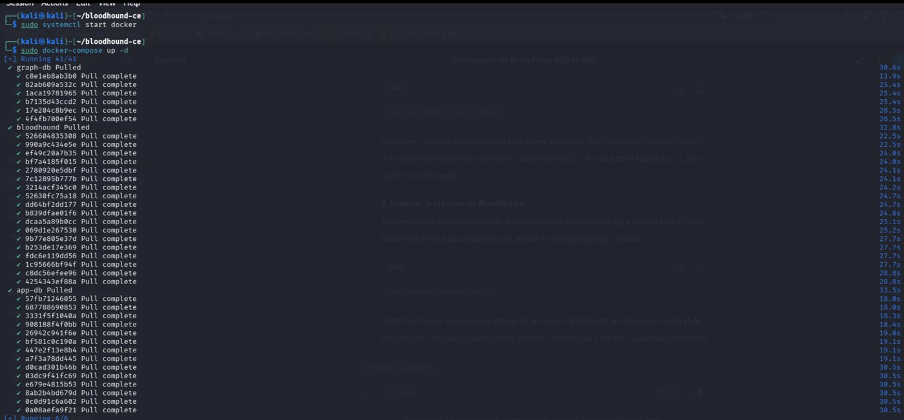
Voici l'interprétation de cette dernière capture d'écran, rédigée dans le même format pour s'intégrer parfaitement à la suite logique de votre compte rendu (suite à l'obtention du hash via DCSync) :
42Compromission totale - Accès Administrateur via Pass-the-Hash (Evil-WinRM)
Auteur : Ali Jamai
Objectif : Exploiter concrètement l'empreinte cryptographique (hash NT) de l'utilisateur Administrator, fraîchement extraite lors de l'attaque DCSync, pour établir une session interactive à distance sans avoir besoin de casser le mot de passe.
Analyse de la commande et des résultats
- L'attaque Pass-the-Hash (PtH) : L'outil evil-winrm est déployé pour cibler le service de gestion à distance du contrôleur de domaine (IP 10.128.138.48). L'argument décisif est -H 0e0363213e37b94221497260b0bcb4fc. Au lieu du traditionnel mot de passe en clair, l'attaquant fournit directement le hash NTLM de l'administrateur.
- Connexion établie : La console affiche Info: Establishing connection to remote endpoint, suivi de l'apparition de l'invite de commande PowerShell interactive Evil-WinRM PS C:\Users\Administrator\Documents>. L'authentification a été acceptée du premier coup.
- Validation de l'accès : Pour confirmer l'environnement, deux commandes de reconnaissance locales sont exécutées :
- whoami retourne thm-ad\administrator, confirmant l'identité au sein du domaine.
- hostname retourne AttacktiveDirectory, confirmant que la session est bien ouverte directement sur le contrôleur de domaine cible.
Mise en perspective technique
Cette capture illustre parfaitement la finalité mortelle d'une attaque d'exfiltration de secrets (comme DCSync).
Dans un environnement Microsoft, le protocole WinRM (Windows Remote Management) supporte nativement l'authentification NTLMv2. Lors de l'échange réseau (Challenge/Response), le mot de passe en clair n'est jamais transmis ; le système calcule la réponse en utilisant le hash NT de l'utilisateur. Par conséquent, pour un attaquant effectuant des opérations réseau, posséder le hash NT est techniquement et mathématiquement équivalent à posséder le mot de passe en clair.
Il est donc inutile de perdre du temps ou de la puissance de calcul à tenter de "cracker" ce hash avec des outils comme Hashcat : le hash est la clé.
Conclusion de l'étape
Cette capture valide l'aboutissement de la chaîne de compromission. L'attaquant est passé d'une exfiltration de données au niveau du réseau à une exécution de code interactive (RCE) avec les privilèges les plus élevés (Administrateur du domaine) directement sur le cerveau de l'infrastructure. Le domaine est officiellement sous contrôle total.
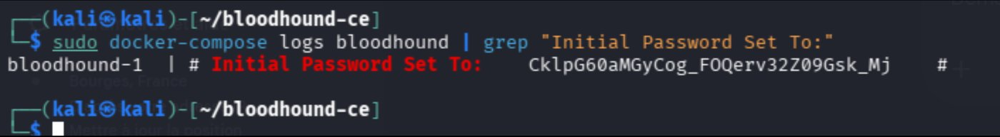
43Découverte de secrets - Exploration SMB et Décodage Base64
Objectif : Exploiter l'accès réseau initial obtenu avec le compte compromis svc-admin pour explorer les partages de fichiers non standards du contrôleur de domaine, dans l'espoir d'y dénicher des informations sensibles ou des secrets mal sécurisés.
Analyse des commandes et des résultats
- Connexion au partage ciblé : La commande smbclient //@victimIP/backup -U spookysec.local\svc-admin%management2005 est exécutée. L'attaquant utilise les identifiants cassés précédemment pour s'authentifier et accéder spécifiquement au partage nommé backup, dont l'existence avait été révélée lors de l'énumération NetExec.
- Exploration et Exfiltration : L'invite interactive smb: \> confirme le succès de la connexion. La commande ls liste le contenu du répertoire, révélant un fichier hautement suspect nommé backup_credentials.txt. L'attaquant télécharge ce fichier sur sa machine locale à l'aide de la commande get backup_credentials.txt.
- Analyse du contenu : L'affichage du fichier (via cat) révèle une chaîne de caractères alphanumériques se terminant par le caractère = (YmFja3VwQHNwb29reXNlYy5sb2NhbDpiYWNrdXAyNTE30DYw). Cette structure est la signature typique d'un encodage Base64.
- Décodage : La commande echo "..." | base64 -d est utilisée pour traduire cette chaîne. Le résultat expose instantanément de nouveaux identifiants en clair : backup@spookysec.local:backup2517860.
Mise en perspective technique
Cette capture illustre une vulnérabilité malheureusement très fréquente en entreprise : le stockage de mots de passe en clair (ou faiblement encodés) dans des scripts ou des fichiers textes partagés sur le réseau.
Il est crucial de rappeler, notamment dans le cadre d'un audit de sécurité, que le Base64 n'est pas un algorithme de chiffrement. Il s'agit d'un simple format d'encodage binaire-vers-texte conçu pour le transport de données, qui n'offre strictement aucune confidentialité. N'importe qui possédant l'accès en lecture au fichier peut instantanément retrouver l'information d'origine.
Ce fichier était probablement utilisé par un script automatisé de l'entreprise pour effectuer des sauvegardes régulières, ce qui explique pourquoi il a été laissé sur ce partage.
Conclusion de l'étape
Cette découverte fortuite mais critique relance totalement la chaîne d'attaque. Nous venons de faire l'acquisition des identifiants d'un second utilisateur (backup), qui a été spécifiquement nommé et conçu pour des tâches d'administration (les sauvegardes). La prochaine étape consistera à évaluer les privilèges de ce nouveau compte dans l'Active Directory, car les comptes de type "backup" disposent très souvent de droits excessifs, notamment sur la réplication de l'annuaire (DCSync).
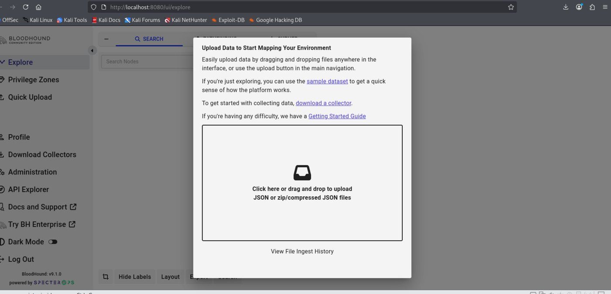
44Reconnaissance Initiale - Cartographie des services et identification de la cible (Nmap)
Objectif : Effectuer un balayage réseau (port scanning) de la machine cible (IP 10.128.138.48) afin d'identifier les ports ouverts, d'énumérer les services en cours d'exécution et de déterminer le rôle exact du serveur pour cartographier la surface d'attaque.
Analyse des résultats du scan
- Identification des services : L'outil Nmap (probablement lancé avec les options d'énumération de version -sV et de scripts -sC) retourne une liste détaillée des services actifs. On y observe l'ouverture de ports extrêmement spécifiques :
- 53/tcp : Service DNS (Simple DNS Plus).
- 80/tcp : Serveur web Microsoft IIS httpd 10.0.
- 88/tcp : Service Kerberos.
- 135/tcp, 139/tcp, 445/tcp : Services MSRPC, NetBIOS et SMB (microsoft-ds).
- 389/tcp et 3268/tcp : Services LDAP (Lightweight Directory Access Protocol) et Global Catalog.
- 3389/tcp : Service de bureau à distance (RDP).
- Fuite d'informations (Information Disclosure) : Les scripts d'énumération de Nmap exécutés contre le port LDAP (389) ont réussi à extraire le nom de domaine complet configuré sur la machine. Le résultat Domain: spookysec.local est clairement visible, de même que le nom du site Active Directory (Default-First-Site-Name).
Mise en perspective technique
Cette capture d'écran représente le point de départ absolu de tout audit d'infrastructure.
La présence simultanée des ports 53 (DNS), 88 (Kerberos), 389 (LDAP) et 445 (SMB) constitue la "signature réseau" indiscutable d'un contrôleur de domaine (Domain Controller) Microsoft Active Directory. Le système d'exploitation sous-jacent peut également être déduit grâce à la version d'IIS (10.0), qui correspond typiquement à Windows Server 2016 ou 2019.
Cette cartographie oriente instantanément la suite de la mission :
1.Le port 88 (Kerberos) ouvre la voie à l'énumération d'utilisateurs (via des outils comme kerbrute) et aux attaques de type AS-REP Roasting.
2.Le port 445 (SMB) nécessitera une tentative de connexion anonyme (Null Session) pour tenter d'extraire la politique des mots de passe ou la liste des utilisateurs (via enum4linux ou NetExec).
Conclusion de l'étape
La cible est formellement identifiée : il s'agit du cerveau du réseau, le contrôleur de domaine gérant l'environnement spookysec.local. L'auditeur dispose désormais des informations fondamentales (adresse IP, ports ouverts, nom de domaine) pour amorcer la phase d'énumération active et rechercher des vecteurs de compromission initiaux (comptes vulnérables, partages mal sécurisés).
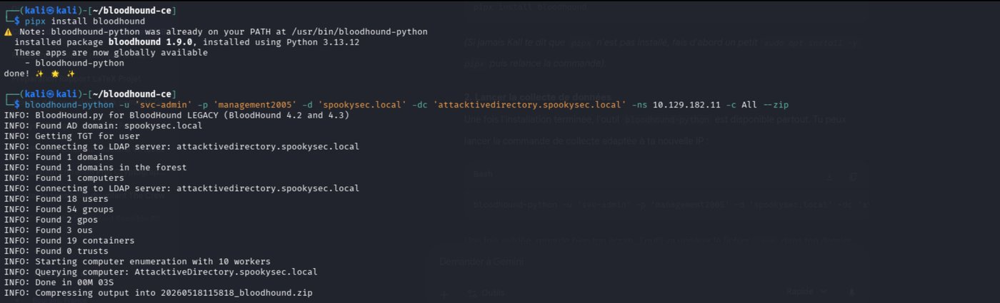
45Reconnaissance Initiale - Énumération SMB et RID Cycling (Enum4linux)
Objectif : Exploiter les services SMB et RPC (ports 139/445) du contrôleur de domaine pour extraire des informations structurelles sensibles de l'Active Directory, notamment la liste des utilisateurs, des groupes, et l'identifiant de sécurité du domaine (SID), sans posséder le moindre identifiant valide.
Analyse de la commande et des résultats
- L'outil d'énumération : La commande enum4linux -a 10.128.138.48 est lancée. L'argument -a demande à l'outil d'exécuter l'intégralité de ses tests d'énumération (politique de mots de passe, partages, utilisateurs, groupes, etc.).
- Extraction via Session Nulle (Null Session) : L'élément le plus critique de cette capture se trouve dans la ligne [+] Enumerating users using SID [...] and logon username '', password ''. Cela confirme que le serveur cible autorise (au moins partiellement) les connexions anonymes (Null Sessions) sur les canaux RPC.
- Extraction du SID du domaine : L'outil parvient à récupérer l'empreinte cryptographique fondamentale du domaine : S-1-5-21-3591857110-2884097990-301047963.
- RID Cycling (Énumération exhaustive) : En combinant le SID du domaine avec des identifiants relatifs (RID) incrémentaux, enum4linux parvient à dumper la liste complète des comptes. On y identifie formellement :
- Les comptes vitaux intégrés : Administrator (RID 500), Guest (501) et le compte système de billetterie krbtgt (502).
- Les groupes privilégiés (Domain Admins, Enterprise Admins, Schema Admins...).
- Le compte machine du serveur : ATTACKTIVEDIREC$ (RID 1000).
Mise en perspective technique
Cette capture illustre l'exploitation d'une vulnérabilité de configuration classique des environnements Windows : la tolérance des sessions nulles (souvent causée par un paramètre RestrictAnonymous mal configuré dans le registre ou les GPO).
En cybersécurité offensive, la connaissance de l'architecture interne est le nerf de la guerre. Une simple adresse IP ne suffit pas pour lancer des attaques sur Kerberos ou tenter des forçages bruts (brute-force) ; l'attaquant a impérativement besoin d'une liste de noms d'utilisateurs valides (usernames). L'énumération par RID (Relative Identifier) contourne les restrictions d'affichage direct en demandant brutalement au système : "Dis-moi à qui appartient l'identifiant SID+500, puis SID+501, etc.". Le système, mal sécurisé contre l'énumération anonyme, répond docilement.
Conclusion de l'étape
Cette phase de reconnaissance est un succès décisif. Nous sommes passés d'une simple cartographie réseau (Nmap) à une vision claire des acteurs du domaine. La récupération du SID racine et d'une liste d'utilisateurs valides ouvre directement la voie aux attaques d'exploitation de la phase suivante. La tactique la plus logique sera désormais d'utiliser cette liste d'utilisateurs pour interroger le service Kerberos (port 88) à la recherche de comptes mal configurés, typiquement via une attaque AS-REP Roasting.
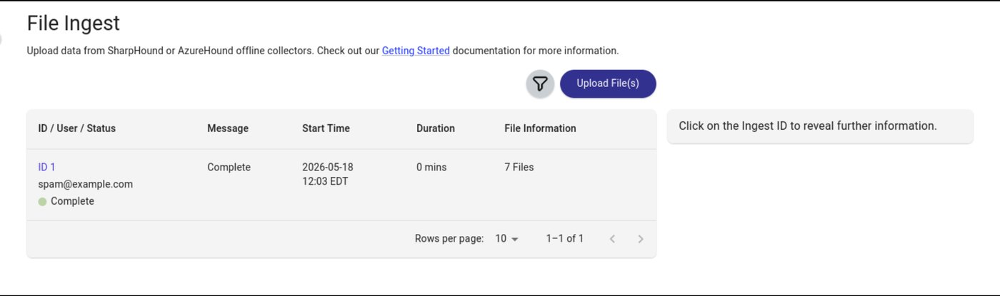
46Exploitation Initiale - Attaque AS-REP Roasting (Impacket-GetNPUsers)
Objectif : Exploiter la liste des utilisateurs valides découverte lors de la phase de reconnaissance pour identifier des comptes vulnérables à l'attaque "AS-REP Roasting" et extraire leur empreinte cryptographique (hash) sans avoir besoin de s'authentifier au préalable.
Analyse de la commande et des résultats
- L'attaque Kerberos : La commande impacket-GetNPUsers spookysec.local/ -usersfile real_users.txt -dc-ip 10.128.138.48 -no-pass -format hashcat est exécutée. L'attaquant cible spécifiquement le contrôleur de domaine en lui soumettant une liste d'utilisateurs (real_users.txt, probablement générée grâce à enum4linux ou kerbrute).
- Ciblage de la pré-authentification : L'outil vérifie pour chaque utilisateur si l'attribut de sécurité exigeant une pré-authentification est actif. La console indique [-] User james doesn't have UF_DONT_REQUIRE_PREAUTH set, confirmant que ce compte est sécurisé contre cette attaque.
- Extraction du Hash (Succès) : Le résultat critique apparaît pour le compte de service : [+] Got hash for 'svc-admin@spookysec.local'. Le contrôleur de domaine (KDC) a renvoyé un ticket AS-REP chiffré.
- Format du Hash : La chaîne retournée commence par $krb5asrep$23$svc-admin@spookysec.local:.... C'est l'empreinte cryptographique du mot de passe de l'utilisateur, formatée spécifiquement pour être ingérée par l'outil de cassage Hashcat (mode 18200).
Mise en perspective technique
Cette capture d'écran illustre la vulnérabilité de configuration initiale de ce laboratoire : la désactivation de la pré-authentification Kerberos (le flag DONT_REQ_PREAUTH dans les attributs du compte svc-admin).
Dans un échange Kerberos normal, un utilisateur doit chiffrer un horodatage (timestamp) avec son mot de passe et l'envoyer au contrôleur de domaine (AS-REQ) pour prouver son identité avant de recevoir un ticket (TGT).
Si cette pré-authentification est désactivée par un administrateur (souvent pour des raisons de compatibilité avec de très vieilles applications), n'importe qui peut demander un ticket pour cet utilisateur. Le serveur répondra docilement en envoyant un message (AS-REP) dont une partie est chiffrée avec le hash NTLM de l'utilisateur cible. L'attaquant n'a plus qu'à récupérer ce message chiffré et à tenter de le casser hors-ligne sur sa propre machine pour retrouver le mot de passe en clair.
Conclusion de l'étape
C'est la première brèche critique dans la sécurité du domaine spookysec.local. L'attaquant a réussi à obtenir le hash du compte svc-admin de manière totalement anonyme. La prochaine étape logique (qui vous a d'ailleurs permis d'explorer le partage SMB par la suite) consiste à utiliser un dictionnaire (comme rockyou.txt) et un outil de brute-force hors-ligne (Hashcat ou John The Ripper) pour casser ce hash $krb5asrep$23$ et obtenir le mot de passe en clair (management2005).
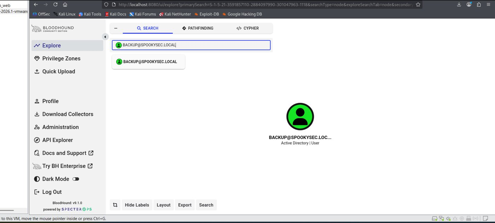
47Exploitation Initiale - Cassage de mot de passe hors-ligne (Hashcat)
Objectif : Exécuter une attaque par dictionnaire hors-ligne sur l'empreinte cryptographique (hash AS-REP) précédemment extraite, afin de retrouver le mot de passe en clair du compte de service svc-admin.
Analyse de la commande et des résultats
- L'outil de cassage : La commande hashcat -m 18200 svc-admin.hash /usr/share/wordlists/rockyou.txt est exécutée. L'argument -m 18200 est crucial : il indique précisément à Hashcat l'algorithme de hachage à attaquer, à savoir du Kerberos 5 AS-REP (etype 23).
- Le dictionnaire ciblé : L'attaquant utilise la célèbre et massive liste de mots de passe publique rockyou.txt pour tenter de faire correspondre les empreintes.
- Le succès du cassage : La section d'état de l'outil affiche la mention Status: Cracked. La console révèle alors la correspondance finale : $krb5asrep$23$svc-admin@spookysec.local: [...hash...] :management2005.
- Le secret révélé : Le mot de passe en clair associé à ce compte de service est management2005.
Mise en perspective technique
Cette capture illustre parfaitement la dangerosité de combiner deux vulnérabilités distinctes : une erreur de configuration (désactivation de la pré-authentification Kerberos, vue à l'étape de l'AS-REP Roasting) et une faille humaine (utilisation d'un mot de passe faible et connu).
L'avantage tactique majeur de cette étape réside dans sa nature "hors-ligne" (offline). Une fois le hash récupéré sur le réseau, l'attaquant effectue le cassage localement sur sa propre machine (Kali Linux), en exploitant sa propre puissance de calcul. Cette action est 100% furtive du point de vue du serveur cible. Elle ne génère aucune tentative de connexion réseau, aucun événement d'échec d'authentification (Event ID 4625), et ne risque pas de déclencher la politique de verrouillage du compte (Account Lockout Policy).
Conclusion de l'étape
La compromission initiale est formellement actée. L'attaquant n'est plus un simple observateur externe ; il possède désormais un jeu d'identifiants totalement valide et en clair (svc-admin / management2005). Cette clé d'entrée va lui permettre de s'authentifier légitimement sur l'infrastructure (par exemple sur les services SMB, comme illustré dans l'étape de découverte du fichier backup_credentials.txt) et de relancer son énumération avec le statut d'un véritable utilisateur du domaine.
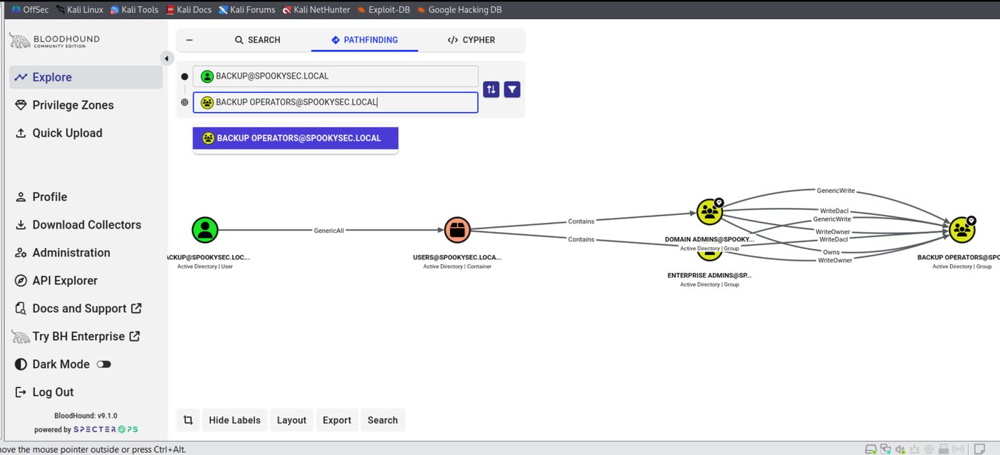